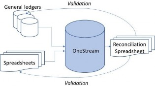
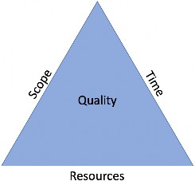
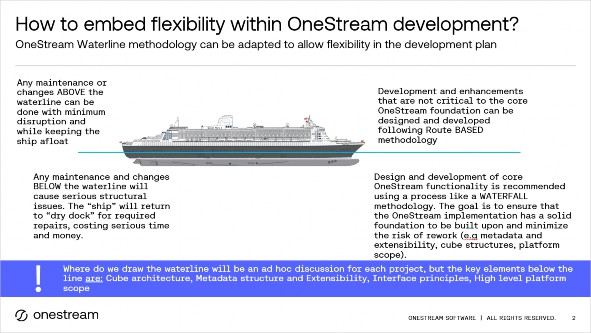
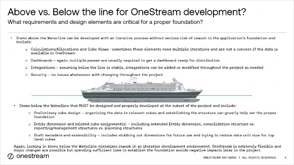

Methodology and the Project
Originally written by Greg Bankston, updated by Greg Bankston
Over the course of this chapter, we will delve into the myriad considerations to keep in mind when beginning an implementation of OneStream Software. We will discuss requirements gathering, along with design considerations, testing methodologies, and the different types of training that can be leveraged.
We will also cover important topics around defining scope, creating a timeline, and supporting your application after the implementation is done. Equally importantly, we will discuss project management in general, along with why a project manager is essential. Of particular interest to many will be discussions on different methodologies, such as Waterfall and Agile.
Of course, before any implementation can begin, the formalities have to be handled. That means a scoping session (or perhaps a few) is required to reach an understanding of the goals and deliverables of the project, as well as the conclusion of contract negotiations between the implementer and the customer.
Once the statement of work is created and executed between all parties, the project is officially funded and approved at all levels. By this time, there should be project managers for the implementer, as well as the customer, already identified; together, they will drive the project going forward until its completion.
Methodology and the Project
Requirements Gathering
The project manager will drive the project after the statement of work is executed and will get things started with a project kick-off meeting that officially communicates the project initiation to key stakeholders, introduces the team, disseminates timelines, sets expectations, and generally gets the ball rolling. For OneStream Services and most OneStream implementation partners, this meeting is immediately followed by the requirements gathering workshop.
Gathering the requirements of the system is truly where it all begins. Before a developer can write a single line of code, they must have a design that they are working towards. However, before a design even begins to take shape, there must be a common understanding between the implementation team and the key business stakeholders defining the desired business outcomes… in plain English, what the system is expected to do when it’s live.
Think of a custom home – a construction worker doesn’t just show up and start pouring concrete for the foundation and throwing up drywall. Before that happens, an architect draws up a set of plans that details every line of wiring, every pipe in the plumbing, and every light switch and fixture.
Before that architect can produce that first draft of plans, there has to be an understanding of what that home is expected to look like when it’s finished. How many square feet? How many bedrooms? Bathrooms? Garages (attached or detached), pool, and so on. Once that understanding is reached about the end-vision, only then can a design begin to take shape. And it’s only then – once the foundations of the design are in place – that a developer can begin to build the metadata, and the rest of the system can take shape from there.
It’s important to emphasize that a totally complete design is not required to start. Back to the custom home example, you don’t have to know what kind of ceiling fans you want in the living room or what kind of carpet you want in the bedrooms on Day One. You can decide that later. However, if you decide you want another bedroom once the foundations have been poured and the framing is up, you’re likely in for a world of extra cost and hassle as the builder tears things down and starts over.
Methodology and the Project › Requirements Gathering
What NOT To Do…
It may seem obvious, but we sometimes need to remind customers that OneStream is a software company and not a process advisory firm.
While implementing the software, OneStream Services or other implementation partners can provide guidance based on experience, but OneStream Software limits its focus solely to the tool itself. There are other consulting firms, including multiple OneStream implementation partners, that can not only implement the software, but also ensure the process is engineered for optimal efficiency. That said, we have seen things that drive better (or worse) results when implementing the software.
When I wrote the first edition of this chapter a few years ago, I called out the “Lift & Shift” implementation approach as an example of what not to do. (To many experienced OneStream professionals, it’s typically called “Lift & S##t” because that’s what the customer ends up within their OneStream application.) It’s something that we still see today, at times, and it consistently causes issues when expanding the platform to address other business problems.
A Lift & Shift is where the customer wants to take a legacy system (typically Oracle Hyperion, SAP’s BPC, Anaplan, Longview, etc.), lift its dimension design, actual metadata (hierarchies, chart of accounts, etc.), shift it over, and ‘drop’ it into a OneStream application. While it sounds like a simple approach that is appealing at the outset, it exacerbates problems, many of which may be unknown at the time.
The primary problem with the Lift & Shift approach is that it leverages a legacy design that was created almost 20 years (or more) ago, creating self-imposed “tool limitation”; it immediately ‘hamstrings’ OneStream with those limitations. When this happens, the customer has essentially cheated themselves out of a significant portion of the latest advances in technology that make OneStream the leading CPM software tool available. Without fail, the customer later complains that they aren’t getting everything they originally expected from OneStream, and it all comes back to the Lift & Shift approach to the design.
While it’s fine (even advisable) to review what is contained within a legacy system, by no means does OneStream advocate replicating what was done before. Rather, use this new implementation to improve upon what was done previously. Identify pain points within a legacy system that OneStream can resolve as the requirements are captured and the design begins to take shape.
With all that in mind, let’s take a closer look at what is essential to understand and document during requirements gathering.
| Critical: Do NOT do a “Lift & Shift” approach when implementing OneStream. It will put immense limitations on the design and future expansion of the platform. |
Methodology and the Project › Requirements Gathering
Foundational Elements
Regardless of whether the first phase is primarily focused on consolidations or FP&A functionality, the primary goal is to build a foundation for the application to enable further expansion and use of the platform.
The primary requirement, before a single meeting is held about requirements, is to ensure that there is proper participation and availability of key stakeholders (both business and IT, as well as others) and subject matter experts, and that the discussions are initiated by an executive sponsor.
Implementations can quickly go awry when key stakeholders are not represented or aligned, or they have no clear vision established at the executive level.
Many key areas of an initial implementation are closely intertwined and must balance against one another. A balance must be found and is primarily done based on how the information is to be utilized. What specific reporting need will be satisfied? What business decision or desired outcome will be achieved with the information?
It is critical to remember that these decisions will have long-reaching implications. If the right level of detail isn’t loaded into Stage, then there could be an impact on Reconciliation Account Manager, as well as drill-back capabilities. The way data is calculated – stored vs. dynamically – is a significant driver of consolidation and Cube View rendering times. Metadata and dimension layouts can impact Data Unit sizes and affect almost everything within the application.
Keep these various elements in mind while designing the foundation and lean on seasoned OneStream architects to find the proper balance among them.
Methodology and the Project › Requirements Gathering
Reporting Perspectives
What other reporting perspectives might be required for consolidating the financial results or reporting to management?
Obviously, some form of entity structure will be required, and there is usually more than one such structure, also known as alternate hierarchies. The most common version is considered a legal or company code hierarchy that would match the company’s legal structure required for reporting to regulatory agencies. However, there could be other hierarchies of the entity structure that may be required as well, such as: geographical or regional, cost center, department, business unit or business area or management structure.
Management reporting is where the rulebook gets thrown out the window. Beyond the common EBITDA line, there can be no end to the custom requirements put forth by management in order to drive the business successfully.
Rarely, if ever, does management reporting align with generally accepted accounting principles. Obviously, this is because management has one set of numbers to report to external stakeholders, but they need an entirely different perspective of the business in order to make operational and strategic decisions.
OneStream can accommodate essentially all management reporting needs. The challenge is going to be getting a solid understanding of what those needs are likely to be in the system. As with everything else, the best place to start is with reports currently in use by the management team to make their daily business decisions.
In many cases, it can be as simple as an alternate hierarchy within the Entity dimension or perhaps an alternate rollup of specific accounts. On the opposite end of the spectrum, the management team may need a dashboard of specific KPIs, which require data not found in your primary data sources. This might require a different means of getting data into the system, as well as creating custom Cube Views or dashboards to present the information to the management team.
Methodology and the Project › Requirements Gathering
Chart of Accounts
There are numerous elements to consider when crafting the chart of accounts within OneStream.
The level of detail required may vary on whether the data is for Actuals or Budget. If account reconciliations are required in the future, make sure to allow for appropriate levels of detail and mappings to assist with that solution when it’s time. For that matter, look to see if there are already other account reconciliation tools in use. If so, it may be beneficial to load the deepest level of detailed data into OneStream and then map the summary level required for reporting to the cube. (More to come on this during design chapters.)
Beyond the entity structure, what other reporting perspectives will be needed, whether now or in the future? (See stubbed dimensions for specifics). Do any of the financial reports contain customer-level data? Would this information be useful while compiling management discussion and analysis reporting? What about product-level details or data for segment reporting?
Methodology and the Project › Requirements Gathering
Data
The driving questions that will guide the entire project are – what data is presented on these reports, and how is it used? One has to review the reports closely to understand the types of data, validate that the data is available, as well as the level of detail required, in order for OneStream to eventually produce these reports.
Are the reports limited to Actual results only? To what level are the results reported? Are they by period or only by quarter? What other levels of data are also included in these reports? Is there department-level data reflected as well? What about channel or product? Is Budget or Forecast data presented? If so, is it at a monthly or weekly level? Maybe it’s a rolling forecast or an annual plan that is used to compare Actuals against.
One critical element to consider is prior years of historical Actuals – how many years of historical Actuals will be required in OneStream once the system is live and in use on a regular basis? Most publicly traded companies that report to regulatory agencies require at least three years of historical Actuals in the system. Some prefer additional years of history as well, while some private companies do not even require that much and can only get by with one or two years of history.
Regardless of how much history is involved, one consistent risk that I have observed on… EVERY.
SINGLE.
PROJECT.
…is the underestimation of the amount of time needed to validate the historical Actuals in OneStream compared to what was previously reported.
Unfortunately, there is no simple rule of thumb to apply in this situation. There are simply too many variables in play that will drive the time required. For example, how complex is the mapping from the old system to OneStream? How many resources are available to assist with the validation effort? Were there any ‘offline top-sides’ (e.g., adjustments made outside the legacy system prior to reporting that were never captured within the data)? In this case, specifically, validating the data will prove to be very difficult indeed.
| Tip: The data on the reports drives everything! What is it? Where did it come from? How will it be used elsewhere? |
Methodology and the Project › Requirements Gathering
Calculated Data
The approach to calculating data is worth touching upon, yet it all comes down to the way the data is to be leveraged and the density of the base-level data. There are two primary methods of calculating data within OneStream – stored and dynamic.
When storing data, the system is physically writing the data into cells into the database. That means that the data is calculated once and doesn’t need to be recalculated unless it’s source data changes. When stored data is called upon for a report, it is simply queried from the cells in which it’s stored and presented in the reporting layer.
For dynamic data, however, the approach is the opposite. It only calls the source data into memory when needed (for example, on a Cube View variance calculation) and processes the algorithm at that time. It does so every single time the calculation is called for during a business process.
Let’s take each of those approaches to their extreme points:
• Store everything – consolidation times will soar, as will storage requirements. Reporting times will be blindingly fast, but only as long as the data doesn’t change.
• Dynamically calculate everything – consolidation times will be next to nothing, but the time required to produce a simple financial statement with a few ratios and variances will be exorbitant.
There’s a balance between the amount of data and how it’s stored vs. performance vs. reporting requirements, and as is typically the case, every customer and application may be different. Each deserves its own analysis and deliberate approach to deliver the best user experience for calculations and reporting functions.
To be fair, the development of the ultimate solution may require more than one iteration, changing some formulas from stored to dynamic and vice versa until that proper balance is found.
Methodology and the Project › Requirements Gathering
Foreign Currency
Unless the company is 100% owned and operated within a single country, there is a high probability that some form of foreign currency will be needed within OneStream.
Will local currency be loaded into OneStream along with exchange rates and translated into reporting currencies, or will it be loaded into OneStream translated into the reporting currency from the general ledger? If the former, where will the foreign exchange rates originate? Is there a reporting requirement for constant currency analysis where the current year’s results are translated against last year’s rates?
Methodology and the Project
Consolidations
Implementations involving consolidations of Actual financial results typically have scope that is better understood and more refined from the outset. That’s because consolidations are usually crafted to satisfy internal management and external regulatory agency reporting requirements.
Simply put – the rules for consolidations are already in place by regulatory agencies and generally accepted accounting principles (US GAAP or IFRS).
The most common (and effective) method to truly understand the core requirements of a consolidation system is to begin with the end in mind by looking at the reports produced by the legacy (or current) system. Typically, these involve an income statement (or profit & loss statement), a balance sheet, and a cash flow statement. Upon reviewing these documents, many requirements should immediately become apparent.
Methodology and the Project › Consolidations
Complex Ownerships
If a company is not 100% owned, or all of its subsidiaries have NCIs (non-controlling interests), there will likely be complex or custom consolidations involved. OneStream has seen some customers create a customized “equity control” solution, which typically handles all ownerships between legal entities using forms, dashboards, customized business rules, etc.
For example, if Entity A has a joint venture with Entity B for Subsidiary C, then the consolidations will likely be pretty simple. Depending upon whether the equity method is used, or if OneStream actually needs to calculate a percentage of assets and liabilities, the calculations are still going to be fairly straightforward.
Where it gets dicey is when Entity A owns 20% of Entity B, which owns 37% of Entity A, yet Entity C owns 15% of Entities A and B. If they were done in Excel, for example, consolidating the legal entities would be difficult because the ownership calculations would want to create a ‘circular reference.’ Building this inside of OneStream is typically the best approach, so long as only the ownership percentages or shares change.
Methodology and the Project › Consolidations
Intercompany Activity
What level of intercompany activity is tracked today? Is intercompany activity only eliminated at the first common parent? Is transaction matching required?
Intercompany activity is a simple requirement to address when the source data has both sides of the transaction (the company code and its intercompany partner), and the mappings are straightforward. The most important thing to understand for intercompany activity is the level at which it’s eliminated and the quality of the source data.
What about intracompany or intersegment activity? While rare, some customers have required the ability to eliminate activity within a single legal entity, but across departments or business areas. That requires a bit more effort during design, but it is definitely something that should be captured as a requirement from the outset.
I once helped manage an implementation on a legacy product at a company that had an enormous amount of intracompany and intersegment activity. One business unit sold a lot of product to another business unit, and the results had to be corrected accordingly. But the Entity dimension was already in use for legal entities and the business units were treated as departments in another dimension. The architect at the time came up with the brilliant idea of using the Entity dimension to create an alternate hierarchy for departments and using the Entity dimension to automatically eliminate the intracompany activity.
Today, OneStream allows for multiple Entity dimensions or can even create a separate cube to handle these types of reporting requirements during design. However, the main thing to remember is to surface the need as early as possible, so that it can be incorporated into the design from the beginning.
An interesting footnote is that architect works at OneStream today and continues to deliver simple but elegant solutions for OneStream customers.
Methodology and the Project › Consolidations
Cash Flow Statement(s)
Cash flows are a challenge for almost everyone. I’ll let the rest of the team discuss (further into the book) their experiences, but almost every project that I’ve been involved with has faced trouble with the cash flow statement. If not in building it, then in tying it out versus prior reported versions.
When capturing requirements on cash flows, the first question to ask is whether it will be by direct or indirect method. What other formats will be produced as well – free cash flow? Is there a specific version of the cash flow statement for internal management versus external? Is the external version solely for GAAP, or is there one required for other reporting purposes, such as bank covenants?
Methodology and the Project › Consolidations
Statistical Accounts
Accounts within OneStream are a wide-open playing field. Beyond what is loaded from the general ledger, OneStream can calculate an endless variety of metrics and allocations as needed. For example, the customer may need calculations for accounts payable, days sales outstanding, accounts receivable turnover, liquidity ratios, EBITDA, or a variety of other statistical or metric calculations.
The most efficient way to capture these requirements is to pore over the most recent reports and pull out those metrics that are commonly used, before creating an inventory of them (along with the logic, point of view, and source data), which can then be passed along to the development team during requirements and design discussions. They can raise any questions or delve into details that they find unusual.
Methodology and the Project › Consolidations
Allocations
Allocations are what I consider to be statistical calculations on steroids. They are found within a consolidations implementation and even more so during Financial Planning and Analysis solutions. They can seem monstrous when first broached, but once they are fully understood and documented, it becomes a matter of coding and testing them.
As with statistical calculations, the most efficient way to capture requirements is to fully understand the logic upfront. What is the process around the allocations? Are they using the Step method, where costs get allocated based on a sequential process?
What is the basis for allocating the costs? Is it an operational data value, like machine hours? If so, where will that data come from, and how will it be loaded? Will cost be allocated based on headcount? If so, will the human resources system allow for access to the database to pull that data into OneStream, or will security requirements require the HR system to export specific data that OneStream will then import from a separate location, such as an FTP folder?
Allocations can definitely be handled efficiently in OneStream, but the development team should be asking these types of questions during requirements in order to understand what challenges await them during design.
Methodology and the Project
Planning
Much like management reporting, there are no rules in Financial Planning and Analysis (FP&A) projects, where the rulebook gets thrown out the window.
Budgeting and forecasting other types of analysis are at the discretion of each company. A company may decide to use zero-based budgeting, or it may decide that a driver-based budget is more appropriate. Business leadership may also decide to use a rolling forecast of either 12, 18, 24, or 36 months. This is especially true when the business model is so complex that it takes so much time and effort to create a budget that half the year has passed by, and it is no longer relevant. Or, perhaps the industry involved is so volatile that only six months can be reliably predicted at any given point, and beyond that is truly a waste of resources. In either case, it likely makes sense to eliminate the budget completely and focus resources on a rolling forecast that is timelier and provides better accuracy.
In the end, it all comes down to what the business leadership team feels is the most accurate way to gauge and anticipate future business.
Methodology and the Project › Planning
Financial Planning Areas
What financial components are typically planned, and at what level?
For example, a pharmaceutical company started their budget by seeding the top 10,000 SKUs at the product level, then moved out into the various functional areas of the company.
Is the workforce planned in detail? Is it by role or by person? Are specific details – such as FUTA, SUTA, and fringe benefits – planned by each person? How are transfers in and out handled in the planning process today?
Are projects currently planned in great detail? Some larger Oil & Gas companies will plan each and every property or region down to the lowest level of detail, including generators, pump heads, and other significant expenditures.
Does the company plan financial statements besides the normal income, balance sheet, and cash flow statements? Are the detailed plans by department or cost center? Again, the starting point should be what reports are currently used to drive operational business decisions. When looking at them, determine what data is on those reports. Where did it come from, and does it add accuracy or value to the process of making business decisions?
Methodology and the Project › Planning
Products and Scenarios
There are many other areas to consider when it comes to executing the planning process.
For example, is there a need to plan on product detail or profitability level? If so, at what level of detail does the product or profitability analysis go down to? Is it down to the SKU level? Or only the product category or class level?
For that matter, what kinds of scenarios will be required throughout the planning process? Will there be multiple Forecast scenarios? Multiple versions for each Forecast? Will they be saved for future analysis to compare the accuracy of the Forecasts versus Actual results? All of these requirements will drive the design in one particular direction or another. For example, say that you want to plan on a weekly basis, and there could be multiple versions for each Forecast. That will likely drive the use of OneStream’s weekly time profile or User Defined dimensions for the weeks along with scenario versions to avoid data explosion in one Scenario dimension. There will be more to come on that in the design chapters.
Methodology and the Project › Planning
Planning Models
Because of the many different types of disparate data involved, it could easily make sense to break a planning process into multiple cubes. You might have one cube specifically for physical net sales, another for eCommerce sales, another for SG&A, etc., especially if each of those operational areas goes into great detail within the Accounts or Entity dimensions. One company has over three dozen models that they replicated within OneStream for their long-range plan. This had to be split into multiple cubes based on common dimensions, which then rolled up into a corporate-level cube for reporting. It was a tremendous amount of work, but they were ecstatic to get out of the world of Excel.
It is critical to get a comprehensive understanding of all the different types of data and reporting requirements involved throughout the planning process(es). If this is actually done thoroughly, it will provide for a much better long-term design and maximize the opportunity for future growth within the application.
Methodology and the Project › Planning
Operational/Financial Signaling
Operational and financial signaling is available with OneStream’s analytic services capabilities. Using Analytic Blend, customers can leverage the multidimensional aspects of the cube with governed data, along with millions of lines of transactional and operational detail.
This type of capability allows customers to create signaling solutions in almost real-time (daily, weekly, etc.) with things like working capital, cash, sales pacing, KPIs, etc. It can also apply financial intelligence to financial and non-financial data. The use of financial hierarchies within the data model allows for a consistent presentation and structure to the data.
Methodology and the Project › Planning
Solution Exchange Solutions
OneStream Solution Exchange has too many downloadable solutions to mention here. The main thing to remember is that Solution Exchange is a key differentiator for OneStream in the CPM industry. It is truly what allows OneStream to be called a platform, since it allows software to be written on top of the OneStream software. No other CPM software can make that claim.
Solution Exchange is the interchange between customers and the solutions offered by OneStream, its partners, and other customers and acts similarly to your smartphone’s application store.
Solutions developed by OneStream or others are made available on the Solution Exchange once they’ve passed OneStream’s quality control standards.
While the top Solution Exchange downloads fluctuate from one month to another, the best approach is to discuss the options with your implementation partner for immediate or future needs.
| Tip: Remember, design with future Solution Exchange options in mind to maximize the return on investment. |
Methodology and the Project › Planning
Solution Exchange (not all-inclusive)
Several solutions have been – and will continue to be – developed, maintained, and supported by OneStream. The primary purpose of the Solution Exchange remains to deliver unique and cutting-edge solutions, particularly Sensible Machine Learning (SML), to address the ever-evolving challenges faced by our customers. Some of the more popular ones are OneStream Financial Close, Application Control Manager, System Diagnostics, Analytic Blend, Relational Blending (such as Planning for Thing, Capital, Cash, People, and Projects, as well as Compliance Reporting), and Task Manager.
Methodology and the Project › Planning › Solution Exchange (not all-inclusive)
OneStream Financial Close
Along with consolidations, reconciling between what was reported to stakeholders and the source data has become a more stringent requirement over the past 20 years. The market has exploded over that time with different software packages produced by other companies specifically to address the challenge of reconciling accounts of all types.
For some customers, this may not be such a major issue because they are only dealing with a few hundred accounts. However, a vast number of companies in the world today deal with literally tens or hundreds of thousands of accounts that require reconciliations on a regular basis, sometimes monthly or quarterly. It’s these companies that start looking at software packages to help them streamline and maximize efficiencies in their reconciliation process and relieve the burden within their accounting departments.
For OneStream, OneStream Financial Close is a natural fit because it is a collection of solutions to maximize efficiencies within the close cycle. In particular, OneStream’s Account Reconciliations solution drives tremendous gains in the time to close. To maximize future flexibility, it is a common practice to load all of the trial balance source data to the Stage, a key differentiator in OneStream’s platform versus other limited applications. In essence, it should be loaded exactly as it appears within the general ledger. Then, the data is simply mapped via transformation rules to reflect what needs to be reported to stakeholders. While a company might have 10 revenue accounts on their P&L, they might have hundreds in their general ledger. Load all of the data into Stage and map it with transformation rules to only show the 10 accounts in the cube. Of course, all of that will be covered further in later design chapters.
As for requirements considerations for reconciliations, one of the first things to think about is whether there should be a centrally controlled process or if it will be decentralized to lower-level business units and only reviewed/managed at the corporate level for the final steps.
Additional considerations would include what currencies are reconciled for source data as well as reporting data, and whether accounts can contain different currencies. How many reconcilers are there going to be, and how often will reconciliations be performed? Where will the sub-ledger data come from, and will it be within OneStream? At what levels are the reconciliations to be required? At the company level? Perhaps at the department or cost center level?
These are the types of questions that will need to be answered when considering the use of account reconciliations for OneStream.
Methodology and the Project › Planning › Solution Exchange (not all-inclusive)
Task Manager
Before beginning to implement Task Manager, the best starting point is to document all of the processes that you will want to manage within Task Manager at the detailed level. You’ll want to have each task documented on a step-by-step level for the task name, frequency, start time, duration, location, task action, conditional formatting requirements, preparer and approver (and/or group), etc.
Are there any task dependencies that you will want to include within Task Manager? Are they inside OneStream, or will they need to be sourced from another system? Is there a need to integrate with other systems to import data or export task statuses? What kind of security will be required for the tasks, their status, and their owners?
Task Manager is a typically straightforward solution to implement. For OneStream Services, we typically allow three to six weeks for installation, configuration, and knowledge transfer to the customer. After that, the customer has all of the knowledge required to continue building out Task Manager for future needs.
Methodology and the Project › Planning
Partner-developed Solutions
Several solutions are developed, maintained, and supported by top-tier OneStream partners and undergo the same quality control reviews as OneStream-developed solutions. They are priced and sold as separate add-on solutions to the OneStream platform. When a customer finds one of these solutions of interest, they can contact that partner directly from within that solution. Once they work out licensing agreements, they will receive a license key from OneStream that will allow them to download or unlock the solution.
Methodology and the Project › Planning
Other Solutions
These solutions are developed by OneStream, partners, or customers and are shared across the breadth of the OneStream community. There is no cost associated with these solutions, and they are supported by a moderated OneStream Community forum. These solutions are typically focused on blueprints, utilities, and other productivity solutions. Some examples include:
• CPM Blueprint
• ESG Blueprint
• Data Schedule Manager
• Hierarchy Validation Tool
• Extensibility Relationship Analysis
Methodology and the Project › Planning
The CPM Blueprint
One key solution found on the Solution Exchange was actually developed by OneStream but made available as a tool for immediate use and a reference application. As mentioned elsewhere, a well-designed application is the foundation for OneStream to be set up for future expansion into other functional use cases and provide further return on investment with the software.
The CPM Blueprint was initiated when Tom Shea connected with customers to hear their feedback about how to further improve the platform. He learned that there was an opportunity to provide sound design guidance from the outset that both customers and partners can leverage when implementing OneStream.
Seven OneStream Distinguished Architects pulled together to craft the CPM Blueprint, which leverages best practices and uses insights gained from hundreds of prior implementations. The includes multiple benefits “out-of-the-box”, including:
• Proper use of extensibility
• Workflows for financial reporting and management reporting
• Cube Views for Budget, as well as row and column templates
• Business rules for a variety of needs:
Custom calculations for budgeting and forecasting (with data management steps)
Data Quality No Calculate Event Handler for workflow steps
Workflow approval/rejection automated emails
Journal Event Handler for segregation of duties
Parse business rules
Batch file load rule w/automated email with mapping errors
Scenarios for constant currency analysis
Confirmation rules for legal reporting
Out of balance
Rollforward checks
Override checks
Retained earnings check
CPM Blueprint has been tested and proven in the field. For customers that have essentially standard requirements, the CPM Blueprint can dramatically accelerate time to value for their implementation. Even for those with highly unusual customer requirements and business processes, the CPM Blueprint is still a valuable tool to leverage for knowledge and learning.
It’s important to point out that no company or partner can create a standard accelerator that every single customer can leverage against their unique business processes and metadata. But OneStream has provided a blueprint as a reference for design guidance, while also making it easy to add/subtract/modify for a customer’s specific requirements.
Methodology and the Project
Designing your OneStream Application
Many people, even those accustomed to legacy systems, still don’t understand that a good design isn’t just about creating good-looking reports. They miss the opportunity to allow for future growth, or they don’t consider their stakeholders’ current expectations that will be transferred to any new system, particularly OneStream.
Methodology and the Project › Designing your OneStream Application
Goals of the Design
As previously stated, it’s impossible to overemphasize the criticality of gathering solid requirements for your OneStream implementation because they will feed directly into – and drive – all design decisions. Even before diving into the details, you need to start by identifying the ultimate goals of the OneStream application beyond any functional requirements. Beyond the types of reports OneStream will need to produce, or the KPIs that need to be calculated, what other design implications need to be addressed as you’re uncovering requirements?
For example – will it be a global application that has to fit maintenance within a specific timeframe? Are there process windows or service level agreements (SLAs) that have to be met for the business on a regular basis, such as source data loads during month-end close that have to be completed within a one-hour time frame or by a certain time of the day? Do the stakeholders already know of an exorbitant amount of data that might pose a challenge to the application, such as saving dozens of versions of a Forecast for FP&A? These are all high-level goals that should be determined even before detailed functional requirements.
Methodology and the Project › Designing your OneStream Application › Goals of the Design
Application Sizing
The size of the application will be driven by many subjective and objective factors, which will be covered in later design chapters. However, you can determine early on if there are potential concerns to address during the design.
One example is the number of members within dimensions, particularly the Entity dimension. A large Entity dimension will – in turn – drive a very large Data Unit. This will have an impact on calculations, data management jobs, etc. A large User Defined dimension, such as products or customers, could also require considerations on the size of the application.
Overall, once you begin to see very large volumes of data and very high member counts within dimensions – yet these dimensions are not all consistently used across functional areas of the company – consider breaking up an application that might grow too large now (rather than later) into multiple, smaller applications.
| Tip: An application design goal is to plan ahead for anticipated growth. |
A case-in-point: an extremely large retail company has global operations, with bricks-and-mortar stores, outlets, internet sales, and international business operations. Data volumes were expected to be millions of records per period just for the bricks-and-mortar stores. Putting all of that data with drastically differing dimensions across the different divisions would, in all likelihood, create future application sizing issues. Knowing this requirement early-on, the implementation team split the application footprint into multiple applications rather than one very large one at the outset, preventing a future rebuild in a year or two.
Application sizing also provides additional flexibility to manage the cloud or hardware resources by application. Even though it will still be a single environment, such as production, having separate applications opens up additional settings for better segregation of resources at the application level. Be sure to check out the chapter on Design, where sizing and the factors that impact it are discussed in more detail.
Methodology and the Project › Designing your OneStream Application › Goals of the Design
Application Performance
Another common design goal for the application revolves around processing times. As mentioned earlier, you need to look at the business processes supported, as well as any SLA requirements imposed by the business users or IT.
A common process time requirement is where the financial reporting team needs data loaded within one hour of its availability from the source general ledger. This is a critical goal to know prior to going into design. That alone could drive the decision to use multiple cubes, extensibility, or both.
Along the same lines, if the business users are accustomed to a processing time today based upon a legacy system – such as running a data management job to create a new Forecast scenario – knowing that existing expectation of time is also critical prior to going into design.
| Tip: An application design goal is to know your stakeholder’s expectations on process times prior to going into design. |
Methodology and the Project › Designing your OneStream Application › Goals of the Design
Data Modelling
With OneStream, the key concept to understand is its power around ways of importing, processing, and analyzing data.
In the early days of CPM, there might be multiple use cases to solve with a CPM tool, whether it was consolidations, FP&A, data analysis, BI, etc. The problem was that they typically required a lot of data integration work to keep everything aligned, homogenized, and current. Consequently, there was a strong tendency to put as much as possible into a single model (cube, application, etc.).
OneStream eliminates the burden of integrating all of that disparate data. It’s all in a single platform. Now the question is – what data model makes the most sense to use?
Think of it this way – a data model is a tool. Like all tools, each type of data model is best used under specific circumstances, with its own advantages and disadvantages. Just like you wouldn’t use a screwdriver to change a tire on a car in the middle of the Daytona 500, you wouldn’t want to use the wrong kind of model to process and analyze a particular type of data. Just as it’s critical to pick the right tool for the job, you must choose the correct type of data model for the use case under consideration.
For example, it wouldn’t be ideal to try and shove 50,000 people into a cube dimension. That type of data is best stored in a register, with summarized and relevant data shared into a cube.
Conversely, it doesn’t make sense to attempt a multitude of financially intelligent calculations with time series (MTD, QTD, YTD) within a register when that can much more easily be accomplished within a cube.
You can mix and match data models as necessary for what fits the use case, volumes, and data type(s) involved. Just as a customer went through a selection process to determine that OneStream was the ideal CPM platform for their needs, it’s worth careful consideration to select the proper data model given the specific set of circumstances.
I’m not exaggerating in the least when I say that there has never been a platform like OneStream on the CPM market. Ever. It hands over a set of tools that any NASCAR pit crew would drool over, so make sure to use the right tool for the job at hand.
Methodology and the Project › Designing your OneStream Application
Task Automation
Throughout the requirements-gathering exercise, the implementation team should be driving the questions around which components of the process can be automated versus those that should be performed manually.
One example is when initiating a new Forecast scenario – it should not require a manual step to actualize the new Forecast scenario by copying all the Actuals for every period up through the most current period. That step is likely an automated task performed after-hours, so it is ready for the business users when they sit down at their desks the next morning.
There are literally dozens of tasks that can be automated within OneStream. They can be anything from data management jobs to copying a dataset from one source point of view (POV) to another, or importing data from source general ledgers, or even exporting data out of OneStream back into a data warehouse.
In the first edition of the Foundation Handbook, I mentioned having joked on numerous occasions that OneStream can probably even automate a customer’s coffee maker for them if they can find one that accepts the right commands. Apparently, Nicolas Argenta took that as a literal challenge and posted on OneStream Community explaining how he was able to do exactly that – get OneStream to make his coffee. As a fellow coffee fiend, I applaud his efforts and success. (His post can be found here… https://community.onestreamsoftware.com/blog/blog/how-to-make-coffee-with-onestream/4206)
Now that OneStream can make my coffee, I’m wondering what else it can do in the kitchen? Since I’m from Texas, I can’t help but wonder if it could start my WIFI-enabled smoker and set the temperature for a brisket or ribs.
Methodology and the Project › Designing your OneStream Application
Task and Data Audit
One of OneStream’s strengths revolves around its ability to capture audit information throughout the application. Essentially, almost any task and any change of data can be recorded for analysis later.
As an example, perhaps this system suddenly experiences a drastic degradation in performance for no obvious reason. Because of task audit information, the administrator can look to see what was happening at that point in time, on what server, who initiated the job, and if it was conflicting with other jobs.
If one particular job is running for an exorbitant amount of time, logging will enable the administrator to trace a particular business rule that is taking too long to execute. Once isolated, the administrator can optimize this business rule, thereby improving performance times.
Another scenario could involve upper management asking why a particular number changed in the Forecast. Data audit capabilities will permit the administrator to explain that a specific finance manager added 2% to the number on Wednesday evening.
The best recommendation for task and data audit is to consider prior questions and scenarios that require significant effort to research. While it is possible to go too far with task and data audit information (which would involve filling the logs too quickly or possibly degrading performance if too intensive), strive to find a balance between capturing enough information versus too much.
Methodology and the Project
Backups and Logs
| Note: this section is primarily for legacy customers still deployed with their own on-premise environments. OneStream is currently offered only as a SaaS solution, and on-premise instances will no longer be supported as of December 31, 2027. At the time of publication, OneStream’s support policy is found at https://www.onestream.com/wp-content/uploads/Sunset-Policy-November-2023-.pdf |
OneStream has a multitude of options when it comes to backups and logs. For an on-premise environment, customers should discuss disaster recovery plans with their IT department. They should also discuss backup requirements from a business perspective for any risk of catastrophic system corruption during business-critical cycles.
For cloud environments, such as Azure, backups are typically available on a minute-by-minute basis. Again, it would simply be a discussion with the customer’s IT group as to what those settings should be within the cloud environment.
Regarding logs, it is a best practice to keep logs at the proper level of detail to provide meaningful information to troubleshoot an issue, but not so much detail that the logs fill up too quickly and require too much maintenance.
Ludovic DePaz wrote a very informative blog on OneStream Community called “Log like a champ with OneStream.” [https://community.onestreamsoftware.com/blog/blog/log-like-a-champ-with-onestream/29056] In that post, Ludovic explains how, when there’s a lot of development effort underway with multiple coders, consider logging to a flat file rather than an error log. This prevents clogging up the main error log with debugging messages.
Ludovic followed that post with another one titled, “Log Like a Champ with JSON” [https://community.onestreamsoftware.com/blog/blog/log-like-a-champ-with-json/32255]. That post takes logging another step further by logging non-string objects as strings. Using JSON functionality, Ludovic explains in that article how to log almost anything… “This technique is not limited to Lists; you can log literally anything: a DimPk, a MemberInfo, and even Databuffers look good with JSON (although they have their own .LogDataBuffer method, which might be preferable most of the time).”
Another requirement is to consider whether those logs should be sent to administrators upon a critical failure. For example, when OneStream is attempting an automated data load, but another maintenance job is still running and locks up the tables that OneStream is trying to access, it might be a good idea to send an email notification with the log attached to administrators, so that they can investigate the issue prior to business users discovering that the data load failed.
Methodology and the Project
Testing Methodology and Analysis
Over the past 20 years, the biggest mistake that I see customers make on an all-too-frequent basis is when they don’t allow sufficient time to properly test what they’ve just built.
A salty project manager told me early in my career that I should allow an equal amount of time for testing as I did for the build. So, if it took three months to build an application, I should allocate an additional three months to properly test it from end-to-end.
When dealing with tight timelines and very limited budgets, that’s a tough stance to maintain. For whatever reason, customers will be willing to spend exorbitant amounts of time and effort testing an ERP, a Point-of-Sale system, or a data warehouse, but they feel like an application responsible for reporting the financial results to their external stakeholders or managing the operations of their business should be rolled out with minimal testing.
We at OneStream cannot stress enough the need for good, solid, and thorough testing, as outlined in this section of the chapter.
Methodology and the Project › Testing Methodology and Analysis
Unit Testing
Unit testing comprises of the initial test by the developer before a development object is turned over for further testing. In this instance, it could be validating a calculation that provides the same results as an Excel model when given the same sample data. It could also be something along the lines of an end-user report that matches a mock-up provided in Excel or PowerPoint.
Every object developed should be unit-tested by the builder before it’s utilized in further development and testing. To do otherwise will cause delays and rework because errors and issues will be found later down the development path.
Methodology and the Project › Testing Methodology and Analysis
Integration / System Testing
Integration or system testing involves a complete end-to-end test that starts with the source data system producing the initial data – sometimes in the form of a flat file or triggering a data load in OneStream – which would then be integrated into OneStream. It might also include producing outputs to other systems as required, such as final consolidated Actuals or the latest driver-based Forecast to be loaded back into a data warehouse.
On multiple occasions, I have seen customers and partners strive to reach a targeted date for system integration testing before the critical development objects were completed. In the vast majority of these cases, it resulted in a halfhearted system integration test with poor results, which misled the implementation team and stakeholders into a false sense of security. Again, it goes back to the concept of allowing enough time for good, thorough, proper testing, and the analysis of the results.
| Tip: You drive the timeline. Don’t let the timeline drive you. Be realistic with the timeline. Delays happen, and schedules might have to be shifted accordingly. Find the balance between holding on to a challenging timeline (when it’s still achievable) versus adjusting it when it’s not. |
Methodology and the Project › Testing Methodology and Analysis
Data Validation
There is no hard data to back this up, but my estimation is that 8 out of 10 projects hit delays when it comes to validating historical data.
It is such a common risk to the project that OneStream Services specifically includes a risk warning in all its statements of work when engaging with customers.
Over the last 20 years, I have heard multiple metrics bandied about for how much time to allow for historical data conversion. In one instance, it was one week for each period of historical data, yet for another situation, it became one month. In the end, there is no hard and fast rule. It simply comes down to the amount of data involved, the complexity of changes between the original chart of accounts and dimensionality compared to the new versions in OneStream, and the integrity of the historical data compared to what was actually reported at that time.
The integrity of historical data can often be the most challenging aspect of the data conversion process. Many years ago, I spent six months guiding a customer through validating one year of historical Actuals. The challenge was because, even though they had their data in a CPM system at the time, they had no governance on ‘pencil in’ entries prior to reporting their financial results.
These ‘pencil-ins’ were last-minute changes to the financial results dictated by the management team just prior to publishing their reports. Consequently, there were a lot of adjustments that were sitting in an Excel file on someone’s laptop that never made it into the CPM system. Obviously, when my customer merged with another company, it made it very difficult to import the historical data from their system into the other company’s system without creating major discrepancies.
Some critical things to remember when it comes to data validation:
• Data reconciliation helps you build the tools you need to support users.
The effort that comes with data validation drives a higher level of comfort and self-sufficiency with OneStream.
• It will uncover EVERY data issue, whether you want it to or not.
• It is where most projects have cost overruns, stall, and struggle.
• More data – more problems…
The more history you load, the more problems you will uncover.
• As issues go down, complexity goes up.
Most common issues (mappings, hierarchy changes) are resolved early on in the first few periods validated, leaving the more difficult items for research.
• Documentation for Audit.
Be sure to confer with Audit to know what documentation they require prior to getting started.
Bottom line – be realistic and pragmatic when estimating how much time data conversion is likely going to require. If not, simply be ready to adjust your timeline once you get into that part of the project.
| Tip: Remember, design with the end in mind! |
Methodology and the Project › Testing Methodology and Analysis › Data Validation
Centralized Data Validation
Each implementation’s process could be a bit different at the detailed level, but it usually comes down to the simple fact of comparing old data (from the legacy system or source general ledger) against new data (what’s in OneStream).
Whether it is better to have a centralized validation process (where corporate does all of the work) or a decentralized validation process (i.e., the field or business units do a significant portion of the work) is open to discussion. There are advantages and disadvantages to both approaches, and it simply depends upon the corporate culture, the various workloads already on the resources, and the demands of the project timeline. In either case, the process is essentially the same but merely distributed across different workgroups.
Assuming the OneStream configuration is compatible, a common approach is to create data extracts for raw year-to-date (YTD) historical data. OneStream transformation rules within OneStream would map the historical data from the source system into the newly created dimensional values within the OneStream application.
Once imported, passed through the transformation rules, and then finally loaded into OneStream, the validation process would begin.
Reconciliation spreadsheets are the primary tool used to support the data validation process by facilitating the comparison of data between the source (the current consolidation system or the manual spreadsheets) and OneStream. Each workbook would contain at least three tabs as follows:
• Tab 1 should contain the historical data from the source system.
• Tab 2 will pull loaded data from OneStream using the Excel add-in.
• Tab 3 will compare the results of the first two tabs and calculate any differences.
A test results tracker spreadsheet will be maintained to log any reconciling differences identified during the data validation process. For each reconciling difference, several details should be documented, such as a description of the difference, the name of the individual who identified the difference, a description of the final resolution, how it was resolved, etc.
A validation tracker should be used to monitor the progress of the data conversion team by providing an overview of the status (loaded, validated, approved) for each entity/time period/ scenario/dept ID/product, etc., combination that is being reconciled/reviewed. This Excel spreadsheet would be used to track the validation process and ensure that progress is being made.
The summarized process regarding historical data would look something like:
• Extract and load the general ledger data to OneStream.
• Validate OneStream against the current legacy system.
• Load data from other systems or manual spreadsheets to OneStream, segregating this data on different UD members to keep it distinct from the general ledger data.
• Validate OneStream against the Excel spreadsheets. The process regarding go-forward data would be:
• Extract and load the general ledger data extracted from the general ledger to OneStream.
• Validate OneStream against the current legacy system.
• Book any adjustments necessary in the consolidation system and repeat. Reports and/or outlines may also be used to facilitate reconciliation and validation. The following diagram would represent the data flow:

Figure 2.1
| Role | Responsibilities |
|---|---|
| OneStream Application Administrator | • Provides approach and methodology for data conversion. • Manages the overall documentation of the data conversion process and applicable results (planning, progress tracking, data conversion resource management, etc.). • Completes data loads. • Manages the creation of reconciliation spreadsheets. • Coordinates the creation and testing of mapping tables from source systems to OneStream. |
| OneStream Project Team | • Builds/runs reconciliation spreadsheets. • Performs initial spot reconciliation using sample reports provided by OneStream. • Supports the reconciliation/validation processes by researching any questions raised by OneStream testers. • Updates test results trackers with issues. |
| Data Conversion Coordinator | • Creates a list of end-users who need to be included and ensures security access is granted and computers are updated as needed. • Tracks results and progress. • Escalates any issues found when needed. • Ensures data conversion effort continues to progress. |
Figure 2.2
Methodology and the Project › Testing Methodology and Analysis › Data Validation
Validation Steps
The following table shows a typical data validation process:
| Step | Description | Action / Decision | Tool | Responsible |
|---|---|---|---|---|
| 1 | Load data to OneStream | Go to Step 2 | OneStream | Administration & Support |
| 2 | Update validation tracker to indicate ‘loaded’ status | Go to Step 3 | Validation Tracker | Administration & Support |
| 3 | Run calculations/consolidations in OneStream | Go to Step 4 | OneStream | Project Team |
| 4 | Refresh reconciliation spreadsheet(s) | Go to Step 5 | Reconciliation Spreadsheet(s) | Project Team |
| 5 | Reconciling differences? | If yes, go to Step 6. If no, go to Step 10 | Project Team | |
| 6 | Determine the nature of reconciling difference(s) and document it/them in the validation tracker | Validation Tracker, OneStream | Project Team | |
| 6a | Extract issue? | If yes, go to Step 1. If no, go to Step 6b | Project Team | |
| 6b | Mapping issue? | If yes, go to Step 3. If no, go to Step 6c | Project Team | |
| 6c | Application configuration? | If yes, communicate to Administration & Support; Administration & Support go to Step 7. If no, investigate, document, and go to Step 2 | Project Team | |
| 7 | Assess if change is required to metadata / business rules | Go to Step 8 | Validation Tracker | OneStream; transition to Administration & Support |
| Step | Description | Action / Decision | Tool | Responsible |
|---|---|---|---|---|
| 8 | Complete change request form and communicate to Application Team | Go to Step 9 | Change Request Form | Administration & Support |
| 9 | Update metadata / business rule (App Team) | Go to Step 2 | Metadata (DRM; OneStream) or Rules (OneStream) | OneStream; transition to Administration & Support |
| 10 | Document resolution in validation tracker (if applicable). Update validation tracker to indicate ‘closed’ status | Go to Step 11 | Validation Tracker | Administration & Support |
| 11 | Update validation tracker to indicate ‘validated’ status | Go to Step 12 | Validation Tracker | Administration & Support |
| 12 | Obtain signoff from a designated approver | Go to Step 13 | Administration & Support | |
| 13 | Update validation tracker to indicate ‘sign off’ status | Go to Step 14 | Validation Tracker | Administration & Support |
| 14 | Extract / save final versions of data extracts, mappings, and loaded data | OneStream | Administration & Support |
Figure 2.3
When a period is ready for signoff, the conversion owner(s) should follow up with the designated approver(s) to obtain a signature signifying that sign-off has been completed.
When signoff has been completed by the designated approver(s), the validation tracker should be updated to reflect the ‘signed-off’ status of the data.
When signoff is completed, the final data extract, mapping tables, and converted data that have been loaded into OneStream must be saved as a final version. Additionally, the entity should be locked.
Methodology and the Project › Testing Methodology and Analysis › Data Validation
Pro Forma
The use of a pro forma period is similar in concept to a placeholder for pro forma reporting.
For example, in the case of acquisitions, there might only be a partial year’s worth of data available from the date of the transaction. Yet, you need to see how the company would have looked if the acquisition had occurred on the first day of the fiscal year.
In that case, you would load only the Actual results from the data of the acquisition into the Actuals scenario. That would prevent skewing the reporting for Actuals in the future. However, you could then create an alternate pro forma scenario or a pro forma member into a data type dimension if you have one to hold the extra data prior to the acquisition date. That would allow for a more meaningful analysis, as if the acquired company had been in place for the full year.
Without naming the companies involved, I once had a customer conduct a divestiture on an outdated technology, which is unfortunately still on the market today.
Due to secrecy, they could not even tell us the name, so we just called it “SpinCo” for “Spin Off Company”. We then spent months separating all of their data and functionality from the existing (multiple) applications. We also created a pro forma scenario to start tracking their data separately from the remainder of the company to give the Board and Executive Management the ability to see the ultimate results of the divestiture as it occurred.
Validating pro forma data would follow the same process as any other dataset, such as Actuals.
Methodology and the Project › Testing Methodology and Analysis › Data Validation
Local Currency Trial Balance
Usually, the first dataset to be validated is the local-currency trial balance. That’s because it is the most pristine form of data available within both systems.
The reconciliation workbook would have the trial balance at the base level of accounts and base level of User Defined dimensions by business unit or entity for the legacy system, another worksheet for the new OneStream data, and a variance worksheet to show the differences.
Work through the first two or three periods of data to confirm that the mappings between the source system and OneStream are correct, and data is valid at the lowest levels.
Beyond mapping differences, variances are most certainly going to originate because of ‘pencil-in’ entries, or other data adjustments that never made it back into the original source data. Once the initial two or three periods have been completed, the root causes of these variances will typically either be corrected (such as a mapping update), or they will repeat themselves later in future periods and be easily found. Consequently, the later periods will usually be easier to validate because of known variances. Only truly new variance issues will arise in future periods.
Once the data is validated at the base (lowest) level, move on to the parent levels of accounts and User Defined dimensions. There will likely be differences in subtotals, and Excel could be a useful tool to find common levels of sub-accounts between the source and OneStream hierarchies. Again, once those first two or three periods are identified, and the validation spreadsheets are set up, the following periods should be easier.
Be prepared that there will be adjustments and entries to correct the base level and parent level data. Accounts or entities move between hierarchies over time. Key metrics or calculations could have been changed over time, as well. It’s guaranteed that some kind of entries will be required.
The important thing, however, is to maintain focus on how OneStream should be built and configured for future use. Don’t go to great lengths trying to rebuild history within OneStream. It’s called history because that’s exactly what it is – history.
Once the local currency trial balance has been validated, moving on to the translated trial balance becomes a much easier effort.
Methodology and the Project › Testing Methodology and Analysis › Data Validation
Translated Trial Balance
Once the local currency trial balance has been completely validated, the translated trial balance should be straightforward, assuming absolutely nothing has changed in the translation methodology. But what if it has?
More challenges could arise when validating translated trial balances, however. Accounting principle or hierarchical structure changes could make validating historical translated data impractical because the variances are too numerous and sporadic. In this situation, it could be simpler to load translated balances for historical data. This should make the data much easier to reconcile.
However, since you’re putting in OneStream, this could be an ideal time to take advantage of a different translation methodology. This leads us to flows.
Methodology and the Project › Testing Methodology and Analysis › Data Validation
Flows
Flows are where you would expect to see differences with translations. US GAAP and IFRS follow the same general principals wherein balance sheet accounts are translated using the end of the period rate (month, quarter, year, etc.), but non-balance sheet accounts – such as P&L and cash flow accounts – would translate at the periodic rate. While OneStream can translate using both methods as needed, not all legacy systems can do so, and it could create variances accordingly.
It is essential to validate the flows themselves before attempting to validate a complex statement of cash flows. It will be much simpler to conduct some rudimentary validations for accounts payable, accounts receivable, etc., in an isolated manner than to configure a complex cash flow statement and then sort out from where an error originates.
Methodology and the Project › Testing Methodology and Analysis › Data Validation
Adjustments
Adjustments will occur. Simply be ready for them and definitely document them. They could occur for a number of reasons.
In many cases, it’s a one-off adjustment to align with a ‘pencil-in’ adjustment that was made to financial statements before reporting the results but which, for whatever reason, never made it back into the source system.
There could also be what are considered period 13 adjustments, final year-end adjustments that are not attributable to a specific period within the fiscal year but are required before officially closing the books. Because some source systems do not have a dedicated period 13, these adjustments are typically offline.
Along the same lines, many accounts are translated at the end of the year rate, so the next year’s opening balance has to use the same value. Other accounts use historical spot rates for translations, such as dividends declared. These would all require adjustments to ensure the data ties as it should.
Methodology and the Project › Testing Methodology and Analysis › Data Validation
Eliminations
Intercompany and ownership eliminations could pose unique challenges because of company restructures over time. Acquisitions, divestitures, joint ventures, and other organizational changes could all drive elimination variances.
Methodology and the Project › Testing Methodology and Analysis › Data Validation
KPIs
Key performance indicators could reveal variances for a variety of reasons – the most common of which are changes to a chart of accounts. In a legacy system, a KPI such as EBIT (Earnings Before Income and Taxes) might have changed due to reclassifications above or below the net income line on the income statement. Perhaps KPI calculations used two years ago were recently deemed irrelevant and are no longer in use. Or maybe the algorithm was altered at some point.
Methodology and the Project › Testing Methodology and Analysis › Data Validation
Allocations
Allocations could reflect variances due to the same reasons as KPIs. Perhaps source data or mappings have changed, or perhaps the algorithms were modified.
During development, the allocations would have been unit-tested based on sample data or historical data. One method to validate allocations in a detailed manner is to create a separate spreadsheet specifically for allocations that compares manually allocated amounts (created by using source data and Excel functionality) against OneStream results. In this approach, if there is a variance, it would be easier to trace because all of the data elements feeding into OneStream would be easily visible within the manually calculated formulas.
Methodology and the Project › Testing Methodology and Analysis › Data Validation
Go-Forward Actual Results
Because the go-forward Actuals won’t actually have any historical perspective for comparison, the best way to validate them is via parallel testing (covered later in this chapter). In this approach, the OneStream-created results are compared to similar results for the same period produced by the legacy system. Known variances at the detailed level would be accounted for due to prior data validation efforts and known differences between the two systems. Any remaining unexplained variances would then be investigated for resolution.
Methodology and the Project › Testing Methodology and Analysis › Data Validation
Centralized vs. Decentralized
As previously mentioned, data validation can be performed via a centralized or decentralized approach. One thing to consider for each approach is the level of knowledge expected by different workgroups.
For example, if field users need to be comfortable within OneStream, they should be involved in data validation. That’s because working within the system – e.g., multiple cycles through working within the application, going in and out of OneStream, investigating variances, troubleshooting calculations – will create a comfort level thanks to familiarity with the tool.
Conversely, if the field users are going to have minimal involvement with OneStream and only put data into the system with a form, yet corporate users are going to be heavily dependent upon OneStream and need to be intimately knowledgeable on its functionality, then a centralized approach would make more sense.
Either way – consider the primary groups of users that will need the most training, and leverage these resources for data validation. While tedious and time-consuming, it’s difficult to underestimate just how much benefit the hard work of data validation brings through hands-on training.
One other consideration when determining a centralized versus decentralized process is the corporate culture in play. Is it more corporately focused, where most decisions are driven by the main office and pushed out to the various business units? Or are the business units and field users more accustomed to various levels of autonomy? Does the corporate accounting office have a significant degree of trust towards the field users who will be validating their data? These are all factors that need to be considered when selecting the most efficient and appropriate process for data validation.
Methodology and the Project › Testing Methodology and Analysis › Data Validation
Rollforwards in Local Currency for Current Year
Rollforwards in the local currency should be simple to validate. You’re simply looking at the prior period balance sheet versus the current period and validating the difference at the local currency level.
This can be addressed with a separate workbook in Excel with those calculations. Since there’s no foreign exchange in play, the calculations should be very straightforward.
Methodology and the Project › Testing Methodology and Analysis › Data Validation
Budget & Forecast
Budget and Forecast numbers can be validated in the same manner as Actuals. However, because they’re not typically at the same level of detail as Actual results, a separate Excel workbook may be required to address the different levels of detail for the charts of accounts.
Methodology and the Project › Testing Methodology and Analysis › Data Validation
Alternate Exchange Rate Scenarios
Alternate exchange rate scenarios use other exchange rates to see the results in different currencies. In the United States, they’re called constant dollar scenarios.
The main purpose is to remove any foreign currency impact from the financial results, thus leaving true operational and economically driven activity, and not skewing the results due to fluctuations in currency rates.
For those new to the concept, an example of this is a company that has operations in a country with a volatile currency. Reporting Venezuelan operations has been a challenge over the last few years because it is difficult to discern what results were because of the company’s performance versus intense fluctuation in the Bolivar in recent times. By using an alternate exchange rate scenario, you can put all of the local currencies into a common currency and view the results without any foreign exchange impact.
Validating these scenarios leverages an Excel workbook once more. Using an Excel sheet to capture the results in local currency and another to calculate them in the common currency (USD or EURO, for example), you compare the results of the calculated common currency versus the OneStream calculated results. The main concern is to use the same exchange rate methodology and exchange rates in both sets of calculations to remove any variances.
Methodology and the Project › Testing Methodology and Analysis › Data Validation
Validation of Outbound Data Integrations with Other Systems
Outbound data integrations for other systems require some ‘out-of-the-box’ thinking, as there is no one-size-fits-all approach.
The main concept is to get to the appropriate level of detail being exported before comparing it to a similar level of detail from a legacy system or data created offline.
For example, if post-consolidated Actual results are exported back into a company’s data warehouse for other reporting needs, use Excel worksheets to compare against a legacy system’s results. The challenge will be getting to a true comparison since, as with historical data, the legacy system will have differences in hierarchies, mappings, etc.
Methodology and the Project › Testing Methodology and Analysis
User Acceptance Testing
User acceptance testing (UAT) gives end-users and stakeholders their first comprehensive opportunity to work with the system. UAT scripts should be representative of normal activities that occur during the business process, such as importing data, validating data within a system, running reports, putting in adjustment entries, etc. The primary goal of UAT is to ensure the application meets all the functional requirements of the end-users and provides them with the opportunity to provide feedback prior to deployment.
The UAT test group should be users who will use the system on an ongoing basis, with the required functional knowledge. They should have expertise and be in the best position to determine if the application satisfies the functional requirements.
UAT scripts ensure consistency with the testing, and confirmation by the business users that they would satisfy the functional requirement. Once completed, they would also serve as documentation for what was tested, considered acceptable, and made ready for deployment.
Defects or issues are captured in an issue log and remediated after UAT is complete but prior to deployment. Any issues that are considered out of scope or future enhancements should be prioritized for future development and included in a subsequent release.
One common delivery method for UAT is to conduct it in a war room setting, meaning a conference room where everyone is going through scripts together, allowing the development team to answer questions as needed.
Before UAT begins, the development team should clearly identify and document the entry criteria, dependencies, and exit criteria.
The following entry criteria need to be satisfied to begin testing:
• Successful completion and sign-off of previous test cycles (unit test and SIT). This includes the finalization of any remediation activities.
• If performance testing was done, this test cycle has been completed successfully.
• The testers have been identified, contacted, trained, and informed of their roles and responsibilities for the test cycle.
• Test conditions, scenarios, data requirements, and test scripts (with detailed expected results) have been finalized, cross-validated against requirements, and agreed to by project management.
• Test cycle control schedule (including the test script execution schedule) has been completed, approved, and communicated to the test team.
• There is a clear cutoff of application development and data import/validation before UAT begins.
• Historical data has been validated through the period(s) to be used in UAT.
• All reports that OneStream is responsible for building have been completed and unit-tested. (Recall that only a representative list of reports was tested during SIT.)
• Strictly enforced change control process to track and assess the impacts of changes to application development and data import/validation versus UAT conditions.
• A representative set of access IDs and passwords for testers have been setup, validated, and communicated.
• Required infrastructure is in place and ready to support test analysts (e.g., desktops, printers, etc.).
• Fully-defined, trained, and approved issue management process.
• Access to test scripts has been granted to all relevant users.
• All required test documentation has been loaded into appropriate project folders or testing software.
• Identification of a POV to use for testing (cube, scenario, time, entities).
Tests should follow the expected activities that users will perform during a business process, which could include performing the following tasks:
• Update metadata.
• Update Member Formulas and business rules.
• Create a test user per Workflow Profile and confirm the user’s functionality.
• Run Cube Views, forms, and reports.
• Perform data import, validate, and load.
• Input data on a form.
• Run reports.
• Open journal period in OneStream.
• Create, approve, and post journal entries.
• Run a journal report.
• Run an intercompany matching report.
• Process the cube to calculate, translate, and consolidate data in OneStream (i.e., run calculations) and test the results of calculations.
• View data using Excel (Cube Views, Quick Views).
The following is a sample test plan for UAT:
| Task Name | Work | Resource Names | Start | Finish |
|---|---|---|---|---|
| User Acceptance Testing Activities | ||||
| Develop UAT scripts | ||||
| • Create & submit UAT scripts | ||||
| • Review UAT scripts | ||||
| • Modify UAT scripts based on feedback | ||||
| • Finalize UAT scripts | ||||
| • Approve UAT scripts | ||||
| Create dashboard for UAT status reporting | ||||
| Test execution plan | ||||
| • Create test execution plan | ||||
| Execute UAT | ||||
| • Execute test scripts | ||||
| • Log any defects in issues log | ||||
| • Record results of tests w/screenshots | ||||
| • Compile & triage defects from testers | ||||
| • Conduct triage meetings | ||||
| Re-test defect fixes | ||||
| • Re-test defect fixes (regression testing) | ||||
| • Log defect fixes |
| Task Name | Work | Resource Names | Start | Finish |
|---|---|---|---|---|
| Finalize test execution & test results | ||||
| Sign-off on UAT results | ||||
| • Update & review traceability matrix | ||||
| • Review traceability matrix | ||||
| • Approve traceability matrix updates |
Figure 2.4
Methodology and the Project › Testing Methodology and Analysis › User Acceptance Testing
Roles and Responsibilities
Below are the roles and responsibilities of the team members:
| Role | Responsibilities |
|---|---|
| Customer | Write, review, and approve UAT scripts and define expected results. Timely update status of issues within the issues log. Coordinate setup of user IDs/security access. OneStream assist as needed. Manage test effort. Coordinate internal / external dependencies. Sign-off on test script results once testers complete work. Review and approve updated traceability matrix. Sign off on QA acceptance report. |
Testers Project Team, Business Users | Review and approve test scripts. Execute test scripts as directed. Identify and compare Actual results to expected results. Log issues observed or encountered and provide daily defect list to test coordinator for status tracking. Update status of issues retested. Communicate any problems or recommendations to customer team. Assist other testers as appropriate. Complete all required documentation. Sign-off on test scripts once completed. |
| Role | Responsibilities |
|---|---|
| OneStream | Provide guidance for the creation of UAT scripts and definition of expected results. Participate in UAT ‘war room’ to explain tests and facilitate a more coordinated execution of tests. Resolve assigned issues and report status to test coordinator. Re-test and regression test defect fixes of the application. Complete all required documentation. Communicate any problems or recommendations to customer. Update traceability matrix and distribute for review & approval. |
| Test Coordinator | Create UAT plan. Run UAT war room. Create QA acceptance report. Document defect status updates. Support UAT by tracking status, defects, and resolutions. |
| Project Manager | Oversee and assist customer team in all aspects of test effort. Provide updates in status and escalation of issues to customer’s management team as needed. |
| Technical Support | Support environments (servers, network connectivity, etc.). Create backups. |
Figure 2.5
Exit criteria define the successful conclusion of the test cycle. The exit criteria include:
• Each data integration should achieve a minimum level of accuracy versus expected results.
• Performing allowed tasks in each Workflow Profile should achieve a minimum level of accuracy versus expected results.
• Completed test scripts with notes.
• Source files and screenshots providing proof of testing and results.
• Test scripts related to resolved issues have been retested, and results have been updated.
• All planned test conditions and scenarios have been executed or determined to not be on the critical path.
• All issues have been documented and assigned.
• Issues that have been prioritized at critical and high-severity levels have been resolved or have a defined action plan for resolution.
• Changes to procedures due to workarounds, etc., have been identified, and process documentation has been updated.
• Test scripts and cycle close memorandum have sign-off, completed by the OneStream testers, customer reviewers and test coordinator, and project manager.
Methodology and the Project › Testing Methodology and Analysis
Load Testing
Since many customers do not require load testing, it’s not commonly included in estimates for implementations unless specifically stated as a requirement. Be sure to discuss during scoping and estimation discussions to ensure that sufficient time, resources, and budget are allotted to satisfy the requirement.
Due to proprietary coding within the OneStream engine, commonly used load testing products such as LoadRunner are incompatible and cannot be used for OneStream implementations.
Early in the OneStream days, there was a free solution available called Load Test Suite, which replicates a typical end-user process. However, it was only available to on-premise customers and was never an option for SaaS customers. Now that OneStream is only offered as a SaaS solution, new customers will need to get creative on how to improvise their load test activities.
The most efficient way to address load testing within OneStream is to identify the points during the process when the maximum level of activity occurs. There could be moments during the process where 100 people are running reports, all while a consolidation is scheduled to execute. Identify those heavy loads on the system and then attempt to replicate them during a test session with real people as much as possible.
If getting a group of testers together that would be large enough to replicate a live situation is not an option, the next best (and actually the most accurate) option is to use parallel tests to measure and tune performance. Since OneStream is a SaaS solution, customers can log a case with Support to request a temporary scale-up of resources for the parallel test. After the test is complete, the customer can work with Support and OneStream diagnostic reports to review levels of activity and stresses on the system. The OneStream instance can then be tuned accordingly.
When considering load testing, be sure to have realistic targets set from the beginning. Define success beforehand in order to understand what is achieved.
Methodology and the Project › Testing Methodology and Analysis
Parallel Testing
Users perform tests necessary to take the system live. They continue to operate primarily in the legacy system, performing their normal activities, but then repeat the same activities in the new system. Results between the two systems are tied out, and any defects are noted. Scripts are not used for parallel testing.
Methodology and the Project › Testing Methodology and Analysis › Parallel Testing
Entry Criteria / Dependencies
The following entry criteria need to be satisfied to begin testing:
• Successful completion and sign-off of previous test cycles (unit test, SIT, and UAT).
• The testers have been identified, contacted, trained, and informed of their roles and responsibilities for the test cycle.
• Test conditions, scenarios, data requirements, and test scripts (with detailed expected results) have been finalized, cross-validated against requirements, and agreed to by project management.
• Test cycle control schedule (including a schedule of test script execution) has been completed, approved, and communicated to the test team.
• Clear cutoff of application data validation activities.
• Strictly enforced change control process to track and assess impacts of application changes versus test conditions.
• All data integrations have been built and tested.
• All historical data has been loaded into the application.
• The customer has completed the validation of all historical data.
• All reports have been completed, tested, and signed-off.
• All users have been trained.
• Security testing has been completed, and 100% of end-users are able to login with appropriate rights.
• All users who normally work on the close should have valid IDs and passwords; this information should be communicated in advance, and users should verify that they are able to login.
• Required infrastructure is in place and ready to support test analysts (e.g., desktops, printers, etc.).
• Identification of a POV to use for testing (cube, scenario, time, entities).
• Fully defined, trained, and approved issue management process.
• All required test documentation has been created.
Methodology and the Project › Testing Methodology and Analysis › Parallel Testing
Datasets and Flow Models
Parallel testing requires that a full data load (all entities) be loaded to effectively simulate an anticipated real close.
Methodology and the Project › Testing Methodology and Analysis › Parallel Testing
Test Plan
A sample test plan is as follows:
| Task Name | Resource Initials | Work | Start | Finish |
|---|---|---|---|---|
| IMPLEMENTATION PHASE | ||||
| Execute deployment plan | ||||
| Create go-live readiness checklist (OneStream to provide) | ||||
| Create cut-over plan (OneStream to provide) | ||||
| Create parallel testing readiness checklist (OneStream to provide) | ||||
| Implementation communication to key stakeholders | ||||
| Conduct parallel #1 | ||||
| Execute parallel 1 | ||||
| Track and manage parallel 1 results | ||||
| Conduct parallel #2 | ||||
| Execute parallel 2 | ||||
| Track and manage parallel 2 results | ||||
| Conduct parallel #3 |
| Task Name | Resource Initials | Work | Start | Finish |
|---|---|---|---|---|
| Execute parallel 3 | ||||
| Track and manage parallel 3 results | ||||
| Compile parallel test execution results | ||||
| Go live decision |
Figure 2.6
Methodology and the Project › Testing Methodology and Analysis › Parallel Testing
Roles and Responsibilities
| Role | Responsibilities |
|---|---|
| Customer | Timely update status of issues to issues log. Manage test effort. Perform initial triage; if issue requires assistance from OneStream, communicate any issues assigned to OneStream and manage triage. |
Testers Project Team, Business Users | Resolve assigned issues and report status to test coordinator. Complete all required documentation. Communicate any problems or recommendations to customer. |
| OneStream | Resolve assigned issues and report status to customer. Complete all required documentation. Communicate any problems or recommendations to customer. |
| Project Manager | Oversee and assist customer team in all aspects of the test effort. Provide updates in status and escalation of issues to customer’s management team as needed. |
| Technical Support | Support environment (servers, network connectivity, etc.). Create backups. |
Figure 2.7
Methodology and the Project › Testing Methodology and Analysis › Parallel Testing
Success / Exit Criteria
Exit criteria define the successful conclusion of the test cycle. The exit criteria include:
• Each data integration should achieve 100% accuracy versus expected results.
• Performing allowed tasks in each Workflow Profile should achieve 100% accuracy versus expected results.
• Test scripts related to resolved issues have been retested, and results have been updated.
• All planned test conditions and scenarios have been executed or determined to not be on the critical path.
• All issues have been documented and assigned.
• Issues that have been prioritized at critical and high-severity levels have been resolved or have a defined action plan for resolution.
• Changes to procedures due to workarounds, etc., have been identified, and process documentation has been updated.
• Test scripts and cycle close memorandum have sign-off completed by testers, customer team, and project management.
After parallel tests have been successfully completed, the system can go live. For a month after go-live, OneStream will provide post-implementation support to ensure the success of the go-live.
Methodology and the Project
Training and System Documentation
Methodology and the Project › Training and System Documentation
Training
Training is just as important (if not more so) than the other phases of the project. Even if the design is beautiful, the build of the system went perfectly, and all of the testing was flawless, none of it matters if the users can’t leverage, or refuse to adopt, the application. The key to ensuring that they do so is training.
Methodology and the Project › Training and System Documentation › Training
Types and Delivery
There are multiple ways to deliver training, which can be outlined below:
• Custom training – the customer administrators would teach all training classes, regardless of user type. OneStream Services or the partner would be present and available to answer questions with which the customer administrator needed help.
• Train-the-trainer – where OneStream Services or the partner would teach customer administrators or super-users to be the trainers for the broader end-user community.
Documentation would be produced as needed, as a part of the initial training phases. Typically, the first training class is for training the administrators and the super-users on the system, as well as teaching them how to convey the information to the user community. This is by far the most common approach seen on OneStream projects, due to its low-cost approach.
• Combined UAT/training – a time and cost savings approach that would combine user acceptance testing with training. The rationale is that on certain projects, the same end-users required for UAT will also be the ones that require the training. It’s an easy way to save at least a week, perhaps more, on the project timeline when you combine UAT and training into a single session, not to mention cost savings as well. Lastly, it is also much easier on end-user schedules because they don’t have to help with separate sessions for UAT and then training.
Given the advances in today’s technology with online meeting services, all of these training approaches could potentially be performed entirely remotely. However, there is tremendous value in having the users in a single room with trainers and administrators walking around and assisting them as they have questions or encounter an issue. While potentially more challenging logistically, it is typically a more efficient and value-added approach.
Methodology and the Project › Training and System Documentation › Training
Audience Determines the Approach
As previously discussed, the audience is (or should be) the ultimate driver for which type of training is most practical.
For intensely intricate systems that involve unsophisticated end-users, a custom training class led by the consulting team could be a more practical approach, especially if the company administrators and super-users are not comfortable and confident with their teaching abilities and knowledge of the system.
Conversely, more straightforward applications with knowledgeable and sophisticated end-users should likely leverage a train-the-trainer approach. Why spend the additional time, money, and energy to create custom classes if the company administrators and super-users can convey the knowledge to the end-user community?
If time is of the essence and cost is a driving factor, then consider combining UAT with training. This is especially true if people have a difficult time pulling away from their day jobs. It will prove easier to get everyone into a room for a single session of a few days than hoping to coordinate everyone’s schedules for several separate UAT and training sessions.
| Tip: Tailor the training to the audience. |
Methodology and the Project › Training and System Documentation
System Documentation
System documentation can vary depending on the implementation partner and the requirements of the application. OneStream Services, for example, delivers an administrator guide at a minimum. There could be other forms of documentation, such as training documentation, rules documentation within the application, data integration documentation, etc.
The main thing to remember is that customers should have sufficient documentation from the implementation partner to be self-sufficient after the project is over. This should be discussed prior to the beginning of the project. Customers should also be sure to get the documentation required prior to implementation as partner consultants move on to other projects. It’s extremely difficult to come back six months after the project is over to write documentation that was forgotten or not needed at the time. It might also be almost impossible if the consultant involved has left the implementation partner altogether.
Methodology and the Project
Managing the Implementation
Methodology and the Project › Managing the Implementation
Identify Your Team
Once the software selection process is complete, and the obvious answer reveals itself to be OneStream, the next step is to choose who will help implement the software.
Choosing an implementation partner, as well as the internal company team, are the most critical decisions once the software has been selected. Consequently, each deserves a little further discussion about them.
Methodology and the Project › Managing the Implementation › Identify Your Team
Choosing a Partner
In the beginning, when OneStream was just emerging onto the market, implementation partners were not as plentiful. Now that OneStream has become a market leader in the CPM space, there are literally dozens of partners available for consideration. But what should you keep in mind when looking at your implementation partner candidates?
To be clear – OneStream places an extremely high value on its partner community. Accordingly, we have made a tremendous investment in the creation of support infrastructure for our partner community. As a member of management for OneStream Services, I can say with confidence – and intimate knowledge – that we have a phenomenal group of partners and any customer of OneStream should feel confident in whichever partner they choose.
Regardless of whether it may be OneStream Services or another partner under consideration, you will want to look at various factors to base your decision upon:
• Partner Certification Level – the higher the certification (Diamond, Platinum, Gold, Silver), the greater the experience and track record of successful projects. However, this successful reputation may come at a premium price.
• Professional Certifications – implementation partners will include various professionals within their consulting ranks, such as CPAs, PMPs, MBAs, etc. Seeing professionals within their implementation team shows a willingness by the partner to invest in quality talent within their organization. Since the first edition of this book, multiple levels of OneStream certifications have been made available as well. Look for the number and level of certifications when considering a partner.
• OneStream Practice – a reputable partner will have a dedicated practice of consultants specifically for OneStream. By practice, I mean more than two or three consultants. While there may be very small partners within the community, their smaller size limits their flexibility when resource constraints arise.
• Industry Experience – the better partners will come to the table with a breadth of experience and knowledge across multiple industries. That is simply the nature of the consulting world. Projects will invariably involve retail, services, manufacturing, and a host of other industries. It is specifically for this experience and knowledge that most customers will choose a particular implementation partner.
• Strength of Team – you are choosing a partner to be a trusted advisor, not just do whatever they are told. Your partner should be ready, willing, and able to tell you if something you want is a bad idea. They should also be able to give you alternatives. Do yourself and your company a favor – listen to them.
Along with choosing the best partner for their company, the executive sponsor has one more critical job – making sure that the key stakeholders listen to that partner. Just as a customer knows their business inside and out, an implementation partner knows the best way to take advantage of the cutting-edge technology found within OneStream.
When they recommend a model or approach, it’s because that’s the best way to get the most out of the system’s capabilities. It may require some minor modifications to a current process to get the best out of OneStream’s capabilities, but if it meets the desired business outcome, that is the thing to remember. There have been multiple implementations that were stalled because a customer did not listen to their implementer and forced them to configure the OneStream application in a particular way, only to experience the poor performance about which the partner warned them and the solution had to be rebuilt accordingly.
OneStream Software can certainly offer some suggestions for implementation partners as a part of the software sales cycle. Yet, it is ultimately the customer’s responsibility to make the decision, based upon their comfort level and assessment of each partner. Be sure to give the decision the consideration that it’s due.
Methodology and the Project › Managing the Implementation › Identify Your Team
Administrator
Just as with the implementation partner, choosing the company’s administrator for OneStream is a critical decision – actually more so – since the implementation partner will only be on the project until the system is in production. The administrator, however, will remain in place for the foreseeable future and be responsible for the maintenance and future growth of the OneStream platform. Obviously, this role is critical for the future of OneStream in each of its customers and there are a few things worth mentioning when choosing one.
• Technical Aptitude – this doesn’t mean that the candidate can program in seven coding languages and understand how IBM’s Watson performs its magic. Rather, the candidate can program in VB.NET, C#, or has the ability to learn to do so.
• Business Acumen – conversely, the candidate does not have to be a CPA. However, it will be very helpful for the administrator to understand the difference between an income statement and a balance sheet. Also, how does a cash flow statement work? Do they understand when an accountant says that last year’s net income doesn’t roll to retained earnings correctly? Will they understand the drivers needed in the system to calculate net sales for next year’s budget? It is not an easy skill set to find.
• Problem-solving – an administrator will also require an analytical mindset that can troubleshoot problems in a structured manner. Invariably, issues will arise: a mapping change is required that was not communicated before data was loaded, a new account was added in the source general ledger but not to OneStream, an end-user is frustrated because they cannot understand where data in the system originated. These are only a few examples that an administrator will chase down when they are responsible for the platform. They will have to have the proper mindset and attitude in order to do so.
Finding a solid administrator requires an investment in training and a patient attitude. They cannot be expected to become OneStream experts in a one-week training course. Identify the administrator before the project begins and send them to proper training prior to the requirements and design phase. This will allow them to have maximum exposure to the consulting team, as well as the decisions made for the system they will support in the future.
| Tip: Be sure to allocate enough administrator resources. Always have a backup and invest in the admins with certified training. |
Methodology and the Project › Managing the Implementation
Define the Scope
A properly defined scope (the body of work to be constructed) is one of the core elements of a successful project. There are multiple factors to be considered when determining the scope prior to the start of the project.
Back to the house analogy – you don’t sign a contract for a builder to show up on Monday and begin to pour the foundations, build the walls, add the roof, and pave the driveway. Before all that happens, a general understanding regarding the size of the house, the number of rooms, if it will have an attached or detached garage, and a finished basement, along with a host of other decisions, needs to be made.
For a OneStream project, there should be an understanding of what will be built, even if at a high level initially. Is this going to be a consolidation system to help close the financial books and report to investors? Or maybe a Financial Planning & Analysis system to create next year’s Budget and weekly Forecasts? Perhaps an account reconciliation tool or a solution to help plan at the resource level? Should it be all of the above? Let’s dig into that...
Methodology and the Project › Managing the Implementation › Define the Scope
Roadmaps
Roadmaps are multi-phased initiatives that lay out a vision for a longer-term program. Rather than a ready-fire-aim approach, where the first phase might be a consolidation solution, potentially followed by a planning solution (but not sure whether it will be a Budget or Forecast), a roadmap actually reviews the business environment and determines a phased approach.
A classic approach with the roadmap is for an implementation partner to look at all of the business processes and their current states. Afterward, the team will then listen to future business objectives and goals to craft a future state of recommended processes across the functional areas. Finally, a gap analysis will show what will be required to move from the current state to the future state. This gap analysis will become the program.
| Tip: OneStream has evolved to be more than solely a CPM tool. It is truly a platform where developers can write custom software on top of the OneStream platform. Therefore, leverage a roadmap from the outset to maximize the future functionality and scalability of the foundation. |
Roadmaps can give business leaders an idea of what they’re signing up for, the resource requirements for the duration, an estimated cost, and a specific set of milestones to show progress along the way. Because the team begins the first phase with the future vision in mind, they also minimize the risk of rework because a future requirement was not considered. By having the end state in mind, the implementation team has as much information as possible to properly design the system for future growth and scalability.
Methodology and the Project › Managing the Implementation › Define the Scope
Implementation Size vs. Complexity
There are multiple constraints on a project with inverse relationships. This means as one side increases, the other side has to decrease. One such example is with implementation size versus complexity.
There have been countless occasions in the past where a customer wishes to implement a highly complex, very robust, and powerful solution that could include 4, 5, 6, or more solutions within the application. Yet, once that scope has been properly estimated, and they see the size of the implementation, sticker shock sets in.
The bottom line (literally) is that with complexity comes more effort. If a customer already has a well-staffed and highly-skilled OneStream department within their organization, a lot of that effort can be assumed by that team. However, that is rarely the case. Consequently, if the work is to be done, it will have to be done by the consulting team.
If budget is a deciding factor (and it usually is), keep the complexity of the solution in check as scope is defined. Doing so will likely prevent instances of sticker shock later down the road.
Methodology and the Project › Managing the Implementation › Define the Scope
Timeline vs. Functionality
There have been multiple instances over the years of the customer who wants to do everything under the sun within the first phase. In essence, they want to ‘boil the ocean.’ If the implementation partner doesn’t put on the brakes, the project team will – for lack of better wording – bite off more than it can chew.
When considering scope, keep it reasonable. Don’t start a project expecting to achieve a consolidation solution, a budget solution, account reconciliations, and People Planning, where each of those solutions is infinitely complex and requires significant resources.
For example, if the timeline available is only four months, it is simply not enough time to put in an extravagant driver-based budget, with planning at the resource level, along with capital planning, as well as cash planning. The timeline is simply too tight.
Instead, focus on what functionality can be delivered within those four months based on the priority communicated by the stakeholders. Perhaps for this budget cycle, start with only the driver-based budget. Another option would be to allow input forms for budget numbers at the base level, which can then be aggregated, and use the extra time to implement cash planning.
In the end, the balance must be maintained between what functionality can be reasonably designed, built, and tested within the time allotted.
Methodology and the Project › Managing the Implementation › Define the Scope
Stakeholder Involvement
The ultimate key to any successful implementation is managing expectations, especially those of stakeholders.
Stakeholders are the ultimate customer, not just for the consulting team, but for the customer implementation team as well. Within the customer’s organization, the stakeholders are the ones who will ultimately decide if OneStream satisfies their needs.
One of the worst things that can happen on a project is for the team to reach UAT, only to be told by the stakeholders afterward that the system will meet none of their actual needs. The only real way this can happen is if the stakeholders were kept in the dark during the build and test phases. Yet, without their involvement on a regular basis, how can anyone be sure that the project is going to meet their needs at the end?
For OneStream Services, we regularly leverage what we call conference room pilots. These are typically for a couple of hours every three weeks or so. They serve as an opportunity to hold checkpoint meetings with the stakeholders to ensure the implementation team is on the right track, and that the stakeholders continue to feel that the system will meet their needs in the end.
The adage that we often hear is: “Involve the stakeholders early and often.” Over the course of many years, and multiple projects, I have never seen that fail to be successful.
Methodology and the Project › Managing the Implementation › Define the Scope
The Holy Triad – Scope, Time, and Resources (Budget, People)
The balance that every project manager in the project team strives for is between three equally important components on every project.
• Time – the overall project schedule
• Resources – people or funding
• Scope – the solution to be built and the work to be performed
The challenge is that if one is increased too much, the other two will begin to suffer.
For example, increasing scope (multiple solutions within a single phase) will either require more time or more resources to achieve those results. By adding the additional work in scope, there is a corresponding need for either more time or more resources to get the work done.
From another angle, what if resources were suddenly to become scarce? Say, two key people left the project team. If the timeline doesn’t change, and no other resources can replace the departing people, then the scope will have to be reduced. It is not realistic to expect a smaller team to deliver the same amount of work within the same timeframe than what was originally expected. If someone were to attempt to force the smaller team to achieve the same results on the original schedule, the most likely outcome will be a substandard work product, or the team will simply implode.
Always seek a balance between the resources available (either funding or people), time, and scope. In the middle, as shown in the diagram below, is where you will find the best quality.

Figure 2.8
Methodology and the Project › Managing the Implementation
Create a Timeline
A case in point for balancing the holy triad is when it comes to creating a timeline. The timeline can either be driven by scope and resources, or it can drive scope and resources itself.
If scope is the most important factor and resources are fixed, then the timeline will have to be flexible accordingly. However, if the timeline is fixed (for example, an upcoming annual budget cycle in four months), as are resources, then the scope has to be flexible.
The question to be asked before the project even begins is – is there a specific timeline driving the project? If so, then your timeline is fixed, and you then determine what scope can be achieved within the timeline with the available resources. If there is no fixed timeline, then scope can become the primary driver.
Methodology and the Project › Managing the Implementation › Create a Timeline
Requirements and Design
The requirements and design phase can take as little as one week or as much as three months (or maybe even more). It all depends upon the complexity of the solution within the scope.
I was speaking with Mel Lenhardt once about requirements and design, and he put it perfectly. In essence, he said there is both a science and an art to building an application. I would wholeheartedly agree.
The science is related to those items that have to be confirmed and documented during requirements and design meetings. Things such as:
• Dimensionality
• Extensibility
• Metadata structures
• Workflows
• Data (inbound and outbound)
• Future roadmap items
All of the above, if they should change significantly halfway through the build, would require significant rework.
| Tip: That conversation is what drove me and a couple of coworkers to create a methodology that is a hybrid of Waterfall and Agile called Waterline. See page 53. |
For example, imagine the application has been built, data has been loaded, and the team is working on Cube Views when suddenly a new requirement surfaces to add an entirely new dimension to the application and the cube. Of course, it can be done, but there will be a lot of rework entailed to rebuild data sources, reimport data, rework the workflows, etc. Get a firm understanding of those items early on to prevent rework later in the project.
Items that do not necessarily require confirmation from the outset fall more into the presentation area – “The Art” as my friend Mel would put it. These would include:
• Cube Views
• Dashboards
• Forms
• Some calculations
These types of presentation items can certainly be defined at a high level but do not require a detailed understanding beyond the data that would appear on them.
In summary, it is common to ‘rush’ the requirements and design discussions, especially if the timeline is fixed and things seemingly start off a bit late. However, a safer approach is to allow extra time instead to ensure all topics can be thoroughly discussed, key decisions made, and everything documented prior to writing one line of code. If the requirement and design are completed early, then it becomes a pleasant surprise, and now there’s extra time to move into the build. This is a much better situation to handle than the alternatives.
Methodology and the Project › Managing the Implementation › Create a Timeline
Build
The build itself (creating the app and metadata, creating data sources and importing data, creating Cube Views, etc.) can vary drastically by project. It depends upon a number of factors, such as:
• The number of alternate hierarchies
• Data sources and their complexities
• Calculations and/or allocations
• The number of workflows and their associated steps
• The number of Cube Views and dashboards
• Security and other items
Volume and complexity will both add time to any of the items above. The challenge is to strike the right balance between them to optimize each one.
Of course, all of this could be a very large body of work that will require significant effort. However, with sufficient resources (people), the work can be divided up, and the timeline accelerated.
Methodology and the Project › Managing the Implementation › Create a Timeline
Test
There are two distinct areas that are commonly reduced when the budget begins to tighten: project management and the test phase.
A safe approach to most projects is to allocate and budget the same amount of time and effort for testing that was estimated for the build phase. Consequently, if it requires three months to build an application, plan for three months for testing. This would include data conversion and validation (covered earlier), SIT (system integration testing), user acceptance testing, parallel testing, potentially performance testing, as well as remediation time for any issues uncovered during the various tests. If that time is ultimately not needed, then the project will finish early and under budget. That’s better than the alternative.
Keep in mind, the more testing performed, the more errors and issues that can be resolved prior to the end-user community using the system. This will drastically preserve integrity in this system for the user community and increase system adoption.
Methodology and the Project › Managing the Implementation › Create a Timeline
Rollout
In order to estimate the amount of time required for rollout, you need to consider the efforts required for migration, the amount of training required, and the logistics involved. These three items are the primary efforts during the rollout phase.
For example, with training, how many users will require training? If you break those users into groups of 10 or 12 per class, how many classes will that require? How many trainers will be available? Are they all in a single country, or will global travel be required – which will need to be scheduled? How much and what type of training documentation will be used (which requires time to create)? All of these questions will drive the training portion of the rollout phase.
When it comes to migrations, this is heavily dependent upon the customer’s corporate and IT policies. Many customers have rigid and formal policies around testing, certifications, and approvals, as well as intricate deployment processes that must be followed before an application is considered in production. Other customers can consider an application in production simply by changing the name of the application.
We have seen some projects with a three-week roll-out phase – two weeks for training and one week for migration. On the other extreme, there have been projects with three months due to extensive training with multiple classes across several countries, as well as complex and rigid migration policies. Like everything else with a complex project, there is no easy answer. All of the factors mentioned above must be considered when creating a timeline for the rollout phase.
Methodology and the Project › Managing the Implementation
Planning to Support Your Application
Great. Awesome. You are now live on OneStream. Yet, how will you maintain it and troubleshoot issues as they arise going forward? Let’s look at some options.
Methodology and the Project › Managing the Implementation › Planning to Support Your Application
Center of Excellence Model
The Center of Excellence (CoE) model involves a team of core individuals – from various functional areas – managed under a centralized model that is dedicated to the support of the OneStream application.
This team could be comprised of representatives from finance, accounting, IT, and audit, as well as any other functional areas that would be directly impacted by the OneStream application.
The reason that this model can be so effective is because it revolves around a core team that is dedicated to supporting OneStream as their primary responsibility rather than doing it on a part-time basis. Because they are focused solely on supporting OneStream, they will provide thought leadership and best practices across the enterprise.
They can also provide a better ROI by performing research and development to understand how to best maximize the value of OneStream. For example, the CoE will immediately understand and recommend using OneStream when an account reconciliation tool is needed, rather than investing in a separate SaaS offering that will cost the company additional money.
Methodology and the Project › Managing the Implementation › Planning to Support Your Application
IT Support
Other companies prefer to focus on their support solely through the IT organization. This may be a good approach, depending upon the resources available within IT. The challenge with a pure IT support model is that it is heavy on the technical skill set and light on the business knowledge.
Stakeholders will have difficulty explaining the requirements to a code-oriented developer. Make no mistake – a developer with technical skills is essential for the support of OneStream. However, there also has to be some element of business knowledge as well. If that skill set can truly be provided from within the IT functional area, then this support model has a good chance of success.
Methodology and the Project › Managing the Implementation › Planning to Support Your Application
Admin/Functional Support
An administrator model is seen most frequently at OneStream. The administrator will attend training prior to the start of the project in order to take full advantage of knowledge sharing and learning opportunities during the requirements and design sessions.
As covered previously in this chapter, an administrator should have equal amounts of technical skills and business acumen. As the implementation is underway, they will be learning and absorbing knowledge from the development team that will become essential after the application is live.
For smaller customers – and many larger ones – the administrator model is the most practical approach to supporting OneStream in the future.
Methodology and the Project › Managing the Implementation
Managing the Project
In my opinion, formed over the last 20-odd years, project management is often the most underappreciated aspect of project implementation. During the project estimate, as the business stakeholders want more, the scope increases, and the cost goes up, the initial place that people look to cut costs is within the project manager role. Time and time again, I have seen this come back around later in the project to create more issues and cost more money than if the project manager role had been left intact and someone was truly in charge at the outset to minimize risk and address issues as they arose.
Methodology and the Project › Managing the Implementation › Managing the Project
Why Use a Project Manager At All?
Whenever I’m asked to justify the need for project management, even in a part-time capacity for a smaller project, I typically use a sports analogy. You constantly see professional NFL teams spend millions of dollars on a head coach, and MLB teams will do something similar for a Manager of their club. While they’re not out there on the field – carrying the ball or swinging the bat – they are considered critical to the success of the team. They identify where the game is at risk by anticipating their opponents’ moves, changing players out when they’re tired or underperforming, and capitalizing on opportunities when they present themselves.
Project managers do the same thing for their teams. A good project manager will see a delay coming days or weeks ahead of time because the circumstances that cause it will formulate well before it actually happens. Developers are typically hyper-focused on writing a complex piece of code (a calculation, transformation logic, or an integration connection) or resolving a performance issue, and are rarely able to look beyond the most immediate deliverable that they’re trying to complete.
A good project manager will also manage scope creep – one of the most common threats to successful completion and an intact budget. It’s truly amazing how frequently a project with a specific set of deliverables will go off track because a business stakeholder asks for just one more report book, or an additional integration.
Early on in my career, I learned that lesson the hard way because – as I was building an Essbase Financial Reporting Cube – a key business stakeholder came by and asked me if I could include one more reporting element, which wasn’t in the original requirements and design discussions. After looking it over, I realized that it would require an entirely new dimension to the model. Once added, however, it caused the database to explode and performance to go down the tubes. I then spent the entire weekend (for free) rebuilding the application back to where it was prior to adding the new dimension. In the end, I lost a full week of the timeline and gave up my own personal time because I didn’t want to simply say, “No, I’m sorry. It’s out of scope.” That was a hard lesson to learn.
To summarize, it’s hard to imagine the New England Patriots without Bill Belichick (which I’m sure Peter Fugere will appreciate). While it’s hard to picture the Yankees from the early 2000s with Mariano Rivera, it’s just as strange to picture them without Joe Torre. Now, tell me again why you don’t think a project manager is needed.
Methodology and the Project › Managing the Implementation › Managing the Project
Managing Risk and Change
Be honest. Risk is inevitable, as is change. And it typically comes with its own bad news. I have an expression that I picked up years ago that says, “Bad news doesn’t get better with time.”
When something on the project goes awry (and it invariably will), it is critical to communicate to the appropriate parties as soon as possible, after all of the facts are available, and put a mitigation plan in place to address it.
The worst moments on a project are when an issue is brought to the management team that has been a risk for weeks, perhaps months, but never communicated. On top of having to deal with the issue itself, there is the added layer of frustration that comes with the sudden knowledge of, “I could have prevented this had I only known about it sooner.” It’s not an enjoyable situation in which to be.
Finally, as the tone of the preceding paragraphs suggests, be realistic when it comes to risk. There is a 100% chance that things will go wrong. Count on it. The best thing any project leadership team can do is anticipate those risks, plan for them, and keep a very close eye on them.
Methodology and the Project › Managing the Implementation › Managing the Project
Effective Communication
The common element throughout most of this chapter centers around the essential need for communication.
Defining scope? Gathering requirements? Managing risk? They all require solid communication.
Throughout the project, ensure that stakeholders and developers alike understand that they have a voice and should use it to convey their ideas, uncertainties, and concerns. If they don’t, they will hesitate to clarify a requirement until it’s about to be tested, or they won’t mention a risk they anticipate because they don’t want to cause problems.
For more formal styles of communication, there are numerous tools, theories, and methodologies available to consider. Yet, things can be simplified to as little as a weekly status report, a project financials report, and a project plan. With those three items, you can manage almost any project.
A quick word on project financials – be sure to include a forecast, also known as an estimate-to-complete. It’s shocking how many Fortune 500 companies, who have immense formal processes and policies in place, don’t ask for – or pay attention to – a project forecast. They monitor Actuals closely, looking at burn reports, timesheets, and run rates, but they have no idea if they have enough budget to get them through project completion.
Ensure your OneStream implementation tracks the forecast at the resource level and by week. That will surface any anticipated overages immediately when someone is working 50 hours per week for two months, or a key resource is extended for six weeks.
Methodology and the Project › Managing the Implementation › Managing the Project
Methodology Type – Agile vs. Waterfall
Waterfall versus Agile. Agile versus Waterfall. This is the discussion that has gone on for years and will likely continue for more to come. So, which one is best for a OneStream project? In the classic answer of a consultant – it depends.
Most fans of Agile will admit that it is not necessarily the best methodology when the requirements are known, the design is firmly locked down, and there’s little risk of them changing. This is the type of implementation where the Waterfall methodology is at its best.
Conversely, Waterfall is not an ideal approach when the requirements are not fully understood, or the design is highly subject to change. In all fairness, this is where Agile shows its strengths.
However, Agile cannot be leveraged in its most classic sense, where requirements are at a conceptual level and the details are refined in the middle of a sprint. The reason is that if a fundamental requirement is discovered in a sprint late in the project, such as adding a new dimension, or changing what data is loaded at the base level, it will likely set the project back drastically.
As mentioned in the section on requirements and the design timeline, it is essential to get the ‘science’ requirements locked down and the design as fully complete as possible. Once those pieces are reasonably final, the subsequent phases of the project can proceed in an Agile manner. In fact, OneStream is on the verge of creating its own version of Agile for future projects, and it may be in use by the time this book goes to print.
After the publication of the first edition of the Foundations Handbook, the Waterfall vs. Agile debate struck much closer to home and drove the creation of something entirely new for OneStream’s implementation approach.
Methodology and the Project › Managing the Implementation › Managing the Project
Why Not Both? – OneStream’s Waterline Methodology
We hear the question a lot… Waterfall or Agile? It’s like Chevy vs. Ford or BMW vs. Mercedes for Europe. The two methodologies are typically positioned against each other. Well, why not both? What if one could take the best parts of each and leverage them at the right times for the project?
There are various hybrid methodologies available, but none seemed to meet the specific challenges of changing or undefined requirements for OneStream during certain parts of the implementation. Therefore, we created Waterline – a hybrid of Waterfall and Agile specifically tailored to OneStream implementations.
In 2022, I had just finished the bulk of a customer’s OneStream implementation that included multiple cubes and extremely complex designs. The customer was adamant that we use Agile, which we did, only to find that the key business stakeholders didn’t fully grasp what functionality they needed the system to provide or the new types of reporting that OneStream could provide.
During various sprints, we had to rebuild some cubes multiple times because of changes to core elements of the design. The key business stakeholders would look at the latest sprint and then realize that they needed (or wanted) a new level of reporting that required a new dimension or to completely rebuild the metadata.
One particular cube had to be rebuilt more than five times before it was approved by the business stakeholders.
Obviously, all of the rebuilding effort was wasted time and money. It literally added weeks to the timeline and tens of thousands of dollars to the budget. It was the catalyst that drove me and two coworkers to create a new hybrid methodology called Waterline.
Gaia Kaldor and I met early on in 2022 to come up with a way to prevent the rework that a pure Agile methodology has the tendency to create. As previously mentioned, the main risk with Agile is that it doesn’t lock down detailed requirements for the application as a whole from the outset. There could be a new requirement in sprint 7 that no one discussed or knew about in sprint 1.
Our conclusion was to take the requirements and design portion of Waterfall and leverage those stages to lock down the essential elements of the application. Once those are confirmed and finalized, the project could move to an Agile approach to create stories for the non-essential elements that wouldn’t create rework. We named this new methodology Waterline.
We chose Waterline because it represented building a beautiful ship on which to sail around the world. As the ship is under construction, it’s critical that everything that lies below the water is locked up tight and will stand the test of time. If not, when the ship is launched from dry dock, it’ll immediately take on water and have to be put back into dry dock for expensive and time-consuming repairs.
Items on the ship that were above the waterline, aren’t as critical early on. It doesn’t really matter what color of paint will be used in the staterooms, what will be on the menu in the dining halls, or what size of pool tables will be in the recreation rooms. None of those items would force the ship back into dry dock and undergo intensive rework.
We used the graphics below to explain it to coworkers, customers, and prospects.

Figure 2.9
Below the waterline would involve reviewing current and anticipated reporting requirements to understand the data models, dimensions, and metadata involved to meet them. Security and other factors that might require separate cubes or foundational elements to the application should also be reviewed and finalized.
Above the waterline items like reports, dashboards, detailed build of security, input forms, etc., would move into an Agile-style mode of delivery with sprints. If a key stakeholder doesn’t like a font or header on a report, that won’t create catastrophic rework and fits nicely into a future sprint.
The graph below reflects the approach when considering above vs. below the waterline.

Figure 2.10
Overall, leverage experienced OneStream architects if considering any form of Agile. Consider what should be above vs. below the waterline.
When presenting Waterline as an option for an implementation methodology, I typically wrap it up with the question to the customer… “Do you want the Queen Mary, or do you want the Titanic?”
Reach out to your implementation partner if more information on Waterline is needed.
Methodology and the Project › Managing the Implementation
Plan for Success
There are several key areas that can be addressed before the beginning of the project that will drastically increase the chances of success.
Methodology and the Project › Managing the Implementation › Plan for Success
Train Early
Have your administrator and, ideally, a backup person, attend training just prior to the start of the project.
This will allow them to take what they learned in class and understand how the implementation team might address their specific requirements during the design sessions. It will also allow them to assist key stakeholders in explaining a requirement in the clearest terms for the implementation team to truly understand it.
Methodology and the Project › Managing the Implementation › Plan for Success
Document Processes Prior to Kick-Off
Processes that are not documented in advance will require significantly more discussion during requirements and design meetings. It’s truly eye-opening when a simple forecast process can take a half-day or more to explain to the implementation team. Even worse is when the customer cannot agree amongst themselves what the process is or even should be.
Documenting these processes before the start of the project will prevent that confusion and maximize the efficiency of the requirements in design discussions.
Methodology and the Project › Managing the Implementation › Plan for Success
Staffing Before, During, and After Project Kick-off
There will be a heavier demand for key stakeholders’ time before and during the project initiation, specifically for requirements and design discussions.
Key stakeholders should be heavily involved in documenting the processes before the project begins, as previously discussed. They should also plan to participate significantly in the requirements and design discussions. This doesn’t mean they will be in the meetings all day and every day. For example, financial planning & analysis stakeholders do not necessarily need to attend the discussions that center around consolidated reporting. Conversely, financial accounting stakeholders do not need to attend the discussions focused on the budgeting and forecasting processes. Manage their expectations – upfront – regarding how much they’ll be needed.
Beyond the requirements and design discussions, there should be periodic meetings to showcase and confirm progress with the stakeholders. They will also participate during user acceptance testing and any parallel tests. It will likely seem like a rollercoaster ride when it comes to the demands on their schedule, but without their participation, there is no assurance that the system will meet their needs.
Methodology and the Project › Managing the Implementation
Quality Assurance
Few things are as painful as moving into a system integration test or user acceptance test, only to find that the development completed was sub-par and doesn’t work properly. When this happens, rework is necessary, timelines suffer, and there are some very tense discussions between the implementation team and customer management.
Methodology and the Project › Managing the Implementation › Quality Assurance
Continuous Process
Quality assurance should be a never-ending process. Someone on the team, usually an architect, would be responsible for reviewing the work of other project team members. Anything found to be substandard should be sent back to that developer for rework. In this way, throughout the build phase, mistakes are uncovered during open testing and caught before they have a chance to reach the end-user community.
Methodology and the Project › Managing the Implementation › Quality Assurance
Minimize Rework
Project leadership on the implementation team should be checking the work of the development team early when they first begin working on a deliverable. For example, rather than waiting until 20 Cube Views are completed, the architect should review the initial two or three to ensure they meet standards. The same approach would be appropriate for workflows, security, business rules, data integrations, etc.
Methodology and the Project › Managing the Implementation
Change Management
Promoting the understanding that change is coming, and is a good thing, is no easy task. The vast majority of people are comfortable in their everyday lives with what they’re doing and the tools they have, so they will need some encouragement to make the switch.
Methodology and the Project › Managing the Implementation › Change Management
Promote User Adoption
The primary goal of change management is to ease the end-user’s anxiety about moving to a new system.
Throughout the project, make every effort to regularly communicate with the end-user community regarding the status of the project, the progress that has been completed, and the new and exciting features that they will receive.
Encourage feedback and questions wherever possible, and leverage executive management to voice similar encouragement when appropriate. Hearing the CEO or President of the company indicate that this new OneStream system is going to make their lives better, and their jobs easier, can truly go a long way toward easing their worries.
Methodology and the Project › Managing the Implementation › Change Management
Tools to Use
There are numerous tools to assist with change management. Some, but not all, include:
• Town Hall meetings
• Newsletters
• Videogram messages
• Lunch and Learns
The implementation partner should have some ideas and suggestions as well. Be sure to get their input at the beginning of the project to have a change management approach enabled from the outset.
Methodology and the Project
Conclusion
This chapter covered the essentials to be considered before, during, and after the project begins. This includes a multitude of things to contemplate when determining the initial scope of the project. It also stresses things to keep in mind when choosing your implementation partner and administrator, along with critical items that will help you plan for success. There are many things to be wary of when going through requirements and design, as well as testing what was built, and validating the data (remember, it’ll take longer than you think), not to mention training options and supporting your application after it’s live.
One final, parting thought. After spending 25 years in this industry and the vast majority of those within Services to implement software, I can state unequivocally that a poorly implemented first phase will prove immensely costly to the customer. User adoption will waiver, and the ability to take further advantage of the solutions available to the platform will evaporate. As mentioned earlier, customers should be diligent and judicious in their selection of an implementation partner. Then, LISTEN TO THEM.
Conversely, partners MUST BE CONSULTATIVE to customers. Just because a customer is accustomed to a particular process does not make it imperative to negatively impact the OneStream design. The customer needs to understand that they’re going down a bad path and prevented from doing so. Partners MUST HAVE the gumption to tell a customer that they are wrong and why (nicely, of course).
I would like to give special thanks to Gaia Kaldor who, along with George Celentano, was my partner in creating Waterline, as well as her valuable help in updating this chapter for the revised version of the handbook. She’s a consummate professional and always willing to lean in to help.
Methodology and the Project
Epilogue
I realized that I had made the right decision in joining OneStream while at my first Services Summit in October 2016. The excitement of what lay ahead was palpable amongst the team. The energy was unique – even better than ‘the good ol’ days’ of Hyperion Solutions. It truly felt like family. Years later, I can emphatically say that it still feels that way.
To top it off, we held an event at The New Orleans School of Cooking, with Chef Kevin Belton, where we all learned to make authentic Cajun dishes. I still cook the jambalaya several times a year because of this event.